“നികുതി ഒടുക്കേണ്ട ഭൂമി രാജകേ
സരി
എന്ന ആദവല്ലവന്റെ പേരിൽ വിളിക്കുന്ന
തായ മരക്കാലുകൊ�ൊണ്ട് അളന്ന്് നെല്ലാ
ല്ലായും,
കൂടാതെ
, സ്വർണ്ണമായും, കാശായും
നികുതി അടക്കേണ്ടതും ... അരുൾമൊ�ൊഴി
ദേ
വ വളനാട്് എന്നുകൂടി അറിയപ്്പെടുന്ന
തെ
ൻകടുവായിലെ
ഇങ്കനാട്ിലുള്ള
പാലൈയുർഗ്ാമം ... ജൈനക്ഷേത്രവും
ഗുരുക്കന്ാരും ഉൾപ്്പെടുന്നതാണ്് ...
പന്തീരായിരത്ി അഞ്ൂറ്ി മുപ്പത്്
കലവും രണ്ട് തൂണിയും ഒരു
കുറുണിയും ഒരു നാഴിയും നെല്ല്്
ഒരു രാജകേ
സരിയുടെ പേരിലുള്ള മരക്കാ
ലുകൊ�ൊണ്ട് അളന്ന്് നികുതിയായി ഒടുക്കേ
ണ്ടതാണ്്. ”
ചോxോളനാട്ടിൽ നിിന്്നുും
ചോxോളനാട്ടിൽ നിിന്്നുും
ഡൽഹിിയിലേക്ക്
ഡൽഹിിയിലേക്ക്
6
South Indian Inscriptions (Vol. 2., pages 47-48)
Page 7

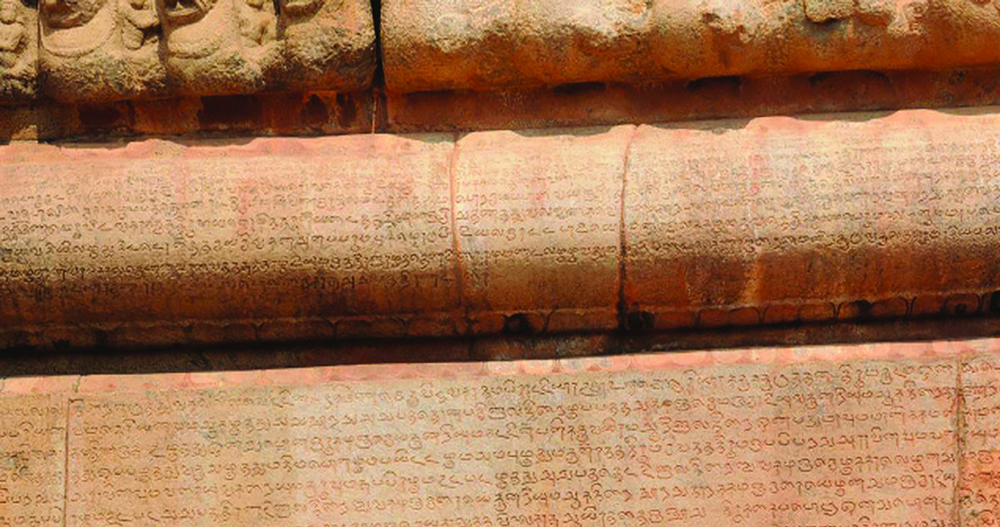
Page 8
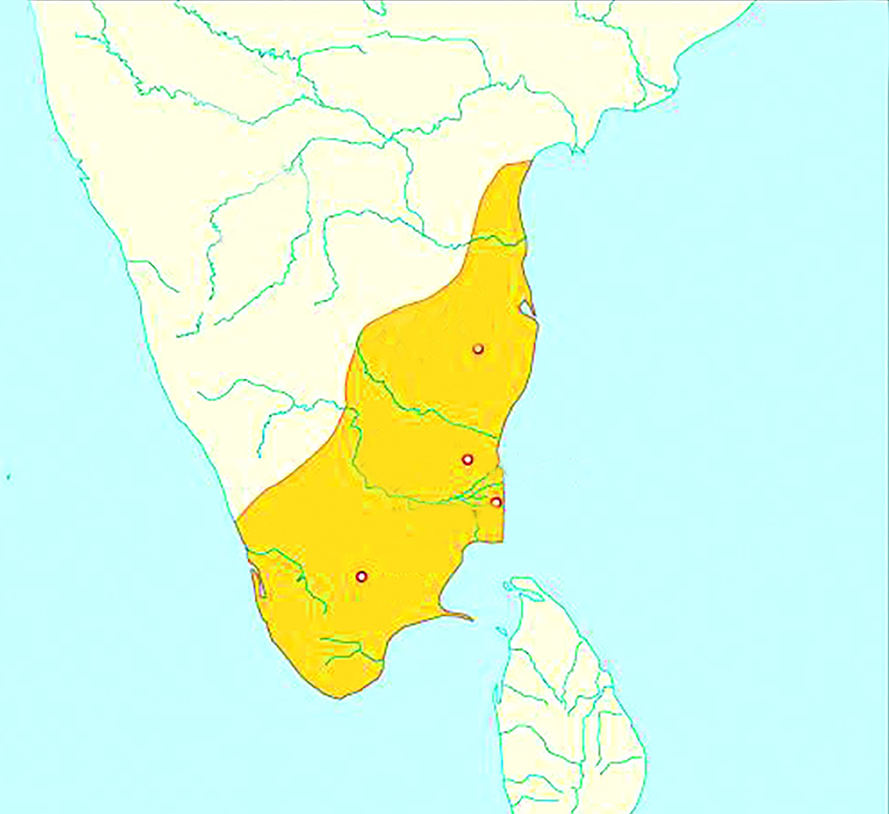

സാാമൂൂഹ്യയശാാസ്ത്രംം I
112
അധ്യാDZായംം 6
തഞ്ചാാവൂൂരിിന്് ചുുറ്റുുമുള്ള ചോ�ോള
മണ്ഡലമായിിരുന്നുു അവരുുടെെ ആ
സ്ഥാാനം. നിങ്ങൾ മുൻക്ലാാസുക
ളിൽ പരിിചയപ്പെെƀട്ട പല്ലവന്മാാരിിൽ
നിന്നുുമാണ്് ചോ�ോളരാജാാക്കന്മാാർ
അധിികാരം പിടിച്ചെെăടുത്തത്.
അക്കാലത്ത് ദക്ഷിിണേ�ന്ത്യയയുടെെ
ഭൂൂരിിഭാഗംം പ്രദേ�ശങ്ങളും�ം ചോ�ോള
രാജാാക്കന്മാാരുടെെ അധീനതയിിലാ
യിിരുന്നുു. സാാമൂൂഹിക-സാാമ്പത്തി
കരംഗത്ത് സ്ഥിരത കൈൈവരിി
ക്കാൻ ഇത് സഹാ
ായകമായിി.
തഞ്ചാാവൂൂരിിലെ� ബൃഹദീീശ്വര ക്ഷേ�ത്രത്തിന്റെെź രണ്ടാംം നിലയിിലെ� തെ�ക്കേ�
ഭിത്തിയിിൽ കാണപ്പെെƀട്ട രാജരാാജചോ�ോളന്റെെź ലിഖിിതത്തിലെ� ഏതാനുംം�
ഭാഗങ്ങളാണ്് മുകളിൽ തന്നിട്ടുള്ളത്. ഇതിൽ എന്തൊ�ൊക്കെ�യാ
ാണ്് പറ
യുന്നതെ�ന്ന്
് നോ�ോക്കാം. രാജാാവിന്റെെź പേ�രിിലുള്ള മരക്കാലുകൊ�ൊണ്ട്് (അളവു
പാത്രം) അളന്ന് നെ�ല്ലാായുംം� സ്വർണ്ണമായുംം� കാശാായുംം� നികുതി അടയ്ക്കേƩണ്ട
താണ്്. തെ�ൻകടുവായ് പ്രദേ�ശത്തിിന്റെെź ഭാഗമാായ ഇങ്കനാട്ടിലെ� പാലയൂർ
ഗ്രാാമത്തിൽ അളന്നതുു പ്രകാരം ഇത്രയുംം� സ്ഥലത്ത് ജൈൈനക്ഷേ�ത്രവുംം� ജൈൈന
ഗുരുക്കന്മാാരുടെെ സമൂൂഹവുംം� ഉൾപ്പെെƀടുന്നുു. 12530 കലവുംം� രണ്ട് തൂണിയുംം� ഒരു
കുറുണിയുംം� (ധാന്യംം� അളക്കാനുള്ള അളവിന്റെെź പേ�രുുകൾ) ഒരു നാഴിിയുംം�
അളവിൽ നെ�ല്ലാാണ്് ഇവിടെെ നിന്നുംം� ലഭിക്കേ�ണ്ടത്്. ഇത് അളക്കേ�ണ്ടത്്
രാജകേ�സ
രിിയായ ആദവല്ലന്റെെź (രാജരാാജ ചോ�ോളൻ) പേ�രിിൽ വിളിക്കപ്പെെƀടുന്ന
മരക്കാൽ കൊ�ൊണ്ടാാണ്്.
സി.ഇ. ഒൻപതാം നൂറ്റാണ്ടുമുതൽ പതിമൂൂന്നാം നൂറ്റാണ്ടുവരെെ ദക്ഷിിണേ�ന്ത്യയ
യിിൽ ഭരണം
ം നടത്തിയിിരുന്ന ചോ�ോളന്മാാരുടെെ രാജ്യത്തെ�ക്കുറിച്ചാണ്് ഈ ലിഖിി
തത്തിൽ വിവരിിച്ചിരിിക്കുന്നത്്. ചോ�ോളരാജ്യത്തിന്റെെź സാാമ്പത്തിക സ്ഥിതിയെ�
ക്കുറിച്ചാണ്് ഇതിൽ പരാമർശിക്കുന്നത്്. എന്തെ�ല്ലാം� വിവരങ്ങളാണ്് ഇതിൽ
നിന്നുംം� നമുുക്ക് ലഭിക്കുന്നത്്?
.................................................................................
.................................................................................
.................................................................................
ചോ�ോള രാജ്യം�ം
കൃഷ്ണ
കാവേ�രിി
കൃഷ്ണ
തുംം�ഗഭദ്ര
കാഞ്ചിപുരം
ഗംംഗൈൈകൊ�ൊണ്ട
ചോ�ോളപുരം
നാഗപട്ടണം
മധുുര
തന്നിട്ടുള്ള ഭൂൂപടം
നിരീക്ഷിിച്ച് ഇന്നത്തെ�
ദക്ഷിിണേ�ന്ത്യയയുടെെ
ഏതെ�ല്ലാം�
പ്രദേ�ശങ്ങൾ
ചോ�ോളരാജ്യത്തിൽ ഉൾപ്പെെƀ
ട്ടിരുന്നുുവെ�ന്ന്് കണ്ടെ�ത്തിി
പട്ടികപ്പെെƀടുത്തുക.
Page 9


സ്റ്റാാൻഡേർഡ് IX
113
ചോxോളനാാട്ടിിൽ നിന്നുംംc ഡൽഹിിയിിലേക്ക്്
ചോ�ോളരാജ്യത്തിന്റെെź സമ്പദ്സമൃദ്ധിിക്ക് ഏറ്റവുംം�
സഹാ
ായകമായ നദിി ഏതായിിരുന്നുുവെ�ന്ന്് ഭൂൂപ
ടത്തിൽ നിന്നുംം� കണ്ടെ�ത്താാൻ കഴിിയുമോ�ോ? ഒരു
നദിി എങ്ങനെ�യെ�ല്ലാാമായിിരിിക്കുംം� നാടിന്റെെź പുരോ�ോ
ഗതിിക്ക് സഹാ
ായകമാവുക?
നിങ്ങൾ കണ്ടെ�ത്തിിയതുുപോ�ോലെ� കാവേ�രിി നദിി
യുടെെ താഴ്വാാരത്താണ്് ചോ�ോളരാജ്യം�ം സ്ഥിതി
ചെ�യ്തിിരുന്നത്്. അതിനാൽ തന്നെ� ആ പ്രദേ�ശംം
വിഭവസ
മൃദ്ധവുുമായിിരുന്നുു. ജനങ്ങളുടെെ പ്രധാന
തൊ�ൊഴിിൽ കൃഷിിയായതിിനാൽ ഭൂൂരിിഭാഗംം ജനങ്ങളും�ം
ഗ്രാാമങ്ങളിലാണ്്
താമസി
ിച്ചിരുന്നത്്.
അവിടെെ
അവർ ഭക്ഷ്യധാന്യങ്ങൾ, പഴവർഗങ്ങൾ, പയർ
വർഗങ്ങൾ, കരിിമ്പ്, വെ�റ്റിില, അടയ്ക്ക, ഇഞ്ചി, മഞ്ഞൾ, വിവിധതരം
പൂക്കൾ എന്നിവ കൃഷിി ചെ�യ്തുു. കൃഷിിക്ക് ജലസേ�ചനത്തിിന്റെെź പ്രാധാന്യംം�
മനസ്സിിലാക്കിയ ഭരണാ
ാധിികാരിികൾ വ്യത്യസ്തങ്ങളായ ജലസേ�ചന സൗകര്യ
ങ്ങൾ ഒരുക്കി. അവയിിൽ കുളങ്ങൾ, ജലസംഭരണി
ികൾ, കനാലുകൾ, കിണ
റുകൾ എന്നിവ ഉൾപ്പെെƀടുന്നുു. ഇതിനു പുറമെെ നദിികൾക്ക് കുറുകെ� തടയണ
കെ�ട്ടി വെ�ള്ളംം തടഞ്ഞ ശേ�ഷംം ആ ജലസംഭരണി
ിയിിൽ നിന്നുംം� ചാലുകൾ
കീറി രാജ്യത്തിന്റെെź വിവിധ ഭാഗങ്ങളിലേ�ക്ക് വെ�ള്ളംം എത്തിച്ചു. പ്രകൃതിദ
ത്തമായ അരുവികൾ ഇല്ലാത്തിടത്ത് ഭീമാ
കാരങ്ങളായ കുളങ്ങൾ കെ�ട്ടി അവയിിൽ
മഴക്കാലത്ത് വെ�ള്ളംം സംഭരിിച്ചു. വെ�ള്ളംം വറ്റി
പ്പോോƀോകാതെ� സംരക്ഷിിക്കപ്പെെƀട്ട ഇത്തരം സംഭര
ണികൾ ‘ഏരിിപ്പട്ടി’ എന്നറിിയപ്പെെƀട്ടു. മാത്രമല്ല
കൃഷിിയുടെെ പുരോ�ോഗതിിക്കായിി കർഷകർക്ക്
നികുതിയിിളവുകൾ നൽകുകയുംം� തരിിശ്
കിടന്ന ഭൂൂമി കൃഷിിക്കുപയുക്തമാക്കാൻ
പ്രോ�ോത്സാാഹനംം നൽകുകയുംം� ചെ�യ്തുു. ക്ഷേ�ത്ര
ങ്ങൾക്കുംം� ബ്രാാഹ്മണർക്കുംം� ഭൂൂമി ദാനം നൽകിി
യതിിലൂടെെയുംം� കൂടുതൽ പ്രദേ�ശത്തേ�ക്ക്്
കൃഷിി വ്യാാ�പിപ്പിക്കാൻ സാാധിിച്ചു. എന്നാൽ
ഇത്തരം ഭൂൂമികളിൽ കൃഷിിപ്പണി ചെ�യ്തത്് അടിമ
സമാാനമാായ ജീവിതം നയിിച്ച കർഷകത്തൊ�ൊ
ഴിിലാളികളായിിരുന്നുു.
ചോ�ോളരാജ്യത്തിന്റെെź സമ്പദ്ഘടനയിിൽ കാർഷിികമേ�ഖല വഹി
ിച്ച പങ്ക്
വിശകലനം ചെ�യ്യുുക.
ഏരിിപ്പട്ടി
തമിിഴകത്തിിന്റെ നെല്ലറ
തമിഴ്നാടിന്റെെź ഹൃദയഭാാഗത്ത് സ്ഥിതി
ചെ�യ്യുുന്ന വിശാാലമായ ഒരു പ്രദേ�ശമാാണ്്
തഞ്ചാാവൂൂർ. നദിികളുടെെയുംം� കനാലുകളുടെെയുംം�
സാാന്നിധ്യംം� ഈ പ്രദേ�ശത്തെ� കൃഷിിക്കനുയോ�ോ
ജ്യമായ സ്ഥലമാക്കി മാറ്റി. നെ�ൽപ്പാടങ്ങളും�ം
തെ�ങ്ങ്, വാഴ, പ്ലാാവ് എന്നിവയുുടെെ തോ�ോട്ടങ്ങളും�ം
ധാരാളമുള്ള ഇവിടമാായിിരുന്നുു ‘തമിഴ്നാടിന്റെെź
നെ�ല്ലറ’ എന്നറിിയപ്പെെƀട്ടത്.
കാർഷിികപുരോ�ോഗതിിയിിലൂടെെ കൈൈവരിിക്കുന്ന മിച്ചോോăോൽപാദനം വാണിജ്യ
ത്തിന്് വഴിിതെ�ളിക്കുമെെന്ന്് മുൻക്ലാാസുകളിൽ നമ്മൾ ചർച്ചചെ�യ്തതാണല്ലോ�ോ.
ചോ�ോളരാജ്യത്തിലുംം� ആഭ്യന്തരവാ
ാണിജ്യവുംം� വിദൂരകടൽവാണിജ്യവുംം�
Page 10
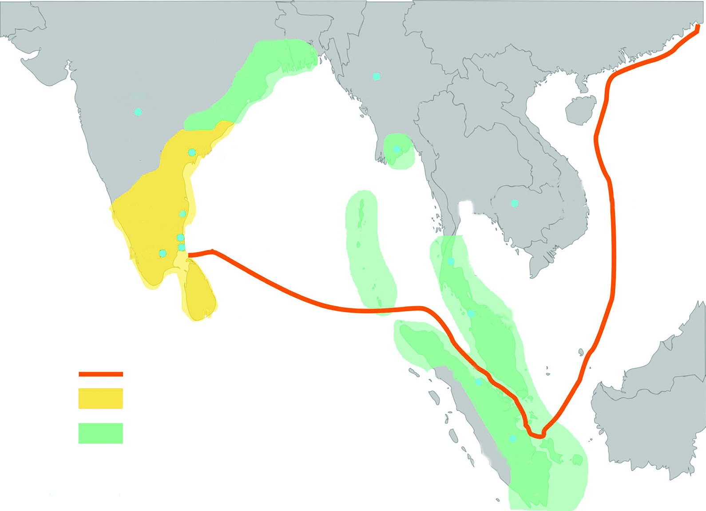
സാാമൂൂഹ്യയശാാസ്ത്രംം I
114
അധ്യാDZായംം 6
വികാസം പ്രാപിച്ചിരുന്നതാായിി അക്കാലത്തെ� ലിഖിിതങ്ങൾ തെ�ളിവ് നൽകുന്നുു.
പ്രാദേ�ശിിക കമ്പോ�ോളങ്ങളിൽ നിരവധിി ഉൽപന്നങ്ങൾ വിറ്റഴിിച്ചിരുന്നുു. നെ�യ്്ത്ത്്
ഒരു പ്രധാന വ്യവസാായമാായിിരുന്നുു. നെ�യ്്ത്തുുകാരുടെെ സംഘങ്ങൾ അക്കാലത്ത്
നിലനിന്നിരുന്നുു. മെെച്ചപ്പെെƀട്ട തുണിത്തരങ്ങൾ ഉത്തരേ�ന്ത്യയയിിലേ�ക്കുംം� മറ്റും�ം കയറ്റുു
മതിി ചെ�യ്തിിരുന്നുു. കരിിമ്പുംം� ഒരു പ്രധാനപ്പെെƀട്ട വാണിജ്യ ഉൽപന്നമാായിിരുന്നുു.
കൃഷിിക്കു പുറമേ� ലോ�ോഹപ്പണിിയുംം� വികാസംപ്രാപിച്ചിരുന്നുു. ക്ഷേ�ത്രങ്ങളിൽ
കാണപ്പെെƀട്ടിരുന്ന വിഗ്രഹ
ങ്ങളും�ം പാത്രങ്ങളും�ം ഇതിന്് തെ�ളിവാണ്്. സ്വർണ്ണം,
വെ�ള്ളിി എന്നിവ കൊ�ൊണ്ടുുള്ള ആഭരണനി
ിർമ്മാണവുംം� ഇരുമ്പുപകരണ
ങ്ങളുടെെ
നിർമ്മാണവുംം� പുരോ�ോഗതിി പ്രാപിച്ചിരുന്നുു. സമുുദ്രതീരത്തു നിന്നുംം� മുത്തുംം�
പവിഴവുംം� ശേ�ഖരിിച്ച് വിദേ�ശത്തേ�ക്ക്് കയറ്റുുമതിി ചെ�യ്തിിരുന്നുു. കംബോോോഡിയ
യിിൽ നിന്നുുള്ള ഒരു കച്ചവടദൗ�ത്യസംഘം പതിനൊ�ൊന്നാംം നൂറ്റാണ്ടിൽ ചോ�ോള
രാജ്യം�ം സന്ദർശിച്ചിരുന്നുു. നാഗപട്ടണം, മഹാ
ാബലിപുരം, കാവേ�രിിപൂംം�പട്ടണം,
ശാാലിയൂർ, കോ�ോർകൈൈ എന്നിവ അക്കാലത്തെ� പ്രധാന തീരദേ�ശ
വാണിജ്യ
കേ�ന്ദ്രങ്ങളായിിരുന്നുു. ഇന്നത്തെ�
വിശാാഖപട്ടണം തുറമുഖം സ്ഥിതിചെ�യ്യുുന്ന
സ്ഥലംം ‘കുലോ�ോത്തുംം�ഗചോ�ോളപട്ടണം’ എന്നാണറിിയപ്പെെƀട്ടിരുന്നത്്. ചോ�ോളരാജ്യ
ത്തെ� ഭരണാ
ാധിികാരിിയായിിരുന്നുു കുലോ�ോത്തുംം�ഗചോ�ോളൻ. നഗരത്താ
ാർ, മണി
ി
ഗ്രാാമം തുടങ്ങിയ സമ്പദ്സമൃദ്ധമാായ കച്ചവടസംഘങ്ങൾ ശക്തമായ വ്യാാ�പാരം
സാാധ്യമാക്കി.
ചോ�ോളന്മാാരുടെെ വാണിജ്യ ശൃംംഖല
വംഗദേ�ശംം
കാഞ്ചീപുരം
തഞ്ചാാവൂൂർ
നാഗപട്ടണം
ലങ്ക
കംബോോോഡിയവിയറ്റ്നാം
മലേ�ഷ്യ
സുമാത്ര
ഇന്തോ�ോനേ�ഷ്യ
യ
വാണിിജ്്യപാതകൾ
ചോxോള പ്രദേശംം
ചോxോള സ്്വവാധീനംം
തായ് ലൻഡ്
ഗംംഗൈൈകൊ�ൊണ്ട ചോ�ോളപുരം
വെ�ങ്കിി
(പാലാ)
മ്യാ�ാൻമാർ
(ബസവകല്യൺ)
കലിംം�ഗ
പടിഞ്ഞാറൻ
ചാലൂക്യർ
കല്യാ�ാണി
Page 11


സ്റ്റാാൻഡേർഡ് IX
115
ചോxോളനാാട്ടിിൽ നിന്നുംംc ഡൽഹിിയിിലേക്ക്്
ബൃഹദീശ്വര ക്ഷേത്രംം
തമിഴ്നാട്ടിലെ� തഞ്ചാാവൂൂർ
നഗരത്തി
ിൽ സ്ഥിതിചെ�യ്യുുന്ന
സുപ്രധാന ചരിിത്രസ്മാരക
മാണ്് ബൃഹദീീശ്വരക്ഷേ�ത്രം
അഥവാ രാജരാാജേ�ശ്വവര
ക്ഷേ�ത്രംം. തഞ്ചൈൈപെ�രിിയ
കോ�ോവിിൽ എന്നുംം� ഇതറിയ
പ്പെെƀടുന്നുു. ശിവഗംംഗ കോ�ോട്ട
യാൽ ചുുറ്റപ്പെെƀട്ടാണ്് ഇത്
സ്ഥിതിചെ�യ്യുുന്നത്്. കൊ�ൊത്തു
പണികളുള്ള രണ്ട് വലിിയ
ഗോ�ോപുുരങ്ങളാണ്് ഇതിന്റെെź
പ്രവേ�ശനകവാടങ്ങൾ. പ്രതി
ഷ്ഠയുടെെ മുകളിലുള്ള കമാ
നത്തിന്് പതിമൂൂന്ന് നിരക
ളാണുള്ളത്. യുനസ്കോോǗോ ഈ
ക്ഷേ�ത്രത്തെ� ലോ�ോകപൈൈതൃക
കേ�ന്ദ്രമായിി പ്രഖ്യാാ�പിച്ചിട്ടുണ്ട്.
ചോ�ോളരാജ്യത്തിന്റെെź സാാമൂൂഹിക-സാാമ്പത്തിക
ജീവിതത്തിൽ ക്ഷേ�ത്രങ്ങൾ വഹി
ിച്ച പങ്ക്
വിലയിിരുത്തുക.
ചോ�ോളന്മാാരുടെെ തലസ്ഥാാനമാായിിരുന്ന തഞ്ചാാവൂൂരിിൽ സ്ഥിതി
ചെ�യ്യുുന്ന ലോ�ോകപ്രശസ്തമായ ക്ഷേ�ത്രംം ഏതെ�ന്നറിിയാമോ�ോ?
രാജരാാജ ചോ�ോളന്റെെź കാലത്ത് (985 – 1014) നിർമ്മിക്കപ്പെെƀട്ട
ബൃഹദീീശ്വര ക്ഷേ�ത്രമാണിത്. അദ്ദേŔഹത്തിന്റെെź പിൻഗാമിയായ
രാജേ�ന്ദ്രചോ�ോളൻ ഒന്നാമന്റെെź കാലത്താണ്് (1014 – 1044) ഗംംഗൈൈ
കൊ�ൊണ്ട ചോ�ോളപുരത്തെ� ക്ഷേ�ത്രംം നിർമ്മിക്കപ്പെെƀട്ടത്. അക്കാ
ലത്തെ� ക്ഷേ�ത്രങ്ങളും�ം അതിസമ്പന്നമാായിിരുന്നുു. സമ്പന്നമാായ
ഖജനാാവാണ്് ക്ഷേ�ത്രനിർമ്മാണത്തിന്് രാജാാക്കന്മാാർക്ക് പ്രചോ�ോ
ദനമാായത്്. ദാനമാായിി ലഭിച്ച ഭൂൂമിയിിൽ നിന്നുുള്ള വരുുമാനം,
ഗ്രാാമസഭ
കളിൽ നിന്നുുള്ള സംഭാവനകൾ, നികുതി പിരിിക്കാൻ
അവകാാശമുുള്ള ഭൂൂമിയിിൽ നിന്നുംം� പിരിിക്കുന്ന നികുതികൾ,
ഭക്തരുടെെ സംഭാവനകൾ, ഗ്രാാമങ്ങളിലെ� സാാമ്പത്തിക ഇടപാടു
കൾ നടത്തുന്ന സ്ഥാാപനം എന്ന രീതിയിിൽ ലഭിക്കുന്ന സമ്പത്ത്
തുടങ്ങിയവയാായിിരുന്നുു ക്ഷേ�ത്രങ്ങളുടെെ വരുുമാനമാാർഗങ്ങൾ.
ക്ഷേ�ത്രങ്ങളോ�ോട് ചേ�ർന്ന് വിദ്യാ�ാഭ്യാ�ാസസ്ഥാാപനങ്ങൾ, ആശു
പത്രികൾ എന്നിവയുംം� പ്രവർത്തിച്ചിരുന്നുു. ക്ഷേ�ത്രങ്ങളുടെെ
നിർമ്മാണം, അവയുുടെെ പരിിപാലനം എന്നിവയുുമായിി ബന്ധ
പ്പെെƀട്ട് നിരവധിിപേ�ർക്ക് തൊ�ൊഴിിൽ ലഭിച്ചിരുന്നുു. കൈൈത്തൊ�ൊ
ഴിിലുകാരും�ം കരകൗൗശല വിദഗ്ധരും�ം ഉപജീവനത്തിനായിി ക്ഷേ�ത്ര
ങ്ങളെ� ആശ്രയിിച്ചിരുന്നുു.
നമ്മുടെെ അയൽരാജ്യമായ ശ്രീലങ്കയുമായുംം� മറ്റും�ം ചോ�ോളന്മാാർ
വാണിജ്യബന്ധം നിലനിർത്തിയിിരുന്നതാായിി മനസ്സിിലാക്കി
യല്ലോ�ോ. ശ്രീലങ്കയിിൽ വാണിജ്യബന്ധം മാത്രമല്ല അവർ ആധിി
പത്യവുംം� സ്ഥാാപിച്ചിരുന്നുു. ചോ�ോളന്മാാരുടെെ ലിഖിിതങ്ങളും�ം
മഹാ
ാവംശം, ചൂളവംശം തുടങ്ങിയ ശ്രീലങ്കൻ കൃതികളും�ം ഇത്
ശരിിവയ്ക്കുന്നുു. തെ�ക്കുകിഴക്കേ�ഷ്യയുമായിി ദക്ഷിിണേ�ന്ത്യയക്കുണ്ടാാ
യിിരുന്ന ബന്ധവുംം� സൗഹൃദവുംം� ഏറ്റവുംം� ശക്തമായതുംം� ചോ�ോള
ഭരണകാ
ാലത്തായിിരുന്നുു. സുമാത്ര, ജാാവ, മലേ�ഷ്യ തുടങ്ങിയ സ്ഥലങ്ങളിലേ�ക്ക്
ചോ�ോളനാട്ടിൽ നിന്നുംം� കച്ചവടക്കാർ മാത്രമല്ല, ബൗദ്ധ-ഹൈൈന്ദവ സന്യാാ�സി
മാരും�ം പണ്ഡിതരും�ം ധാരാളമായിി യാത്ര ചെ�യ്തിിരുന്നുു. ഈ യാത്രകൾ ചോ�ോള
രാജ്യത്തെ� ഭാഷ, മതംം, ആശയങ്ങൾ, വാസ്തുശില്പകല എന്നിവ ആ നാടുകളി
ലേ�ക്ക് വ്യാാ�പിക്കാൻ കാരണമാായിി.
ഭൂൂപടം നിരീക്ഷിിച്ച് ചോ�ോളരാജ്യത്തിന്് ഏതെ�ല്ലാം� നാടുകളുമായിി വാണിജ്യ
ബന്ധമുണ്ടാായിിരുന്നുുവെ�ന്ന്് കണ്ടെ�ത്തിി പട്ടികപ്പെെƀടുത്തുക.
Page 12


സാാമൂൂഹ്യയശാാസ്ത്രംം I
116
അധ്യാDZായംം 6
ചോxോളഭരണംംം
ചോ�ോളരാജ്യത്തെ� പ്രധാനപ്പെെƀട്ട രാജാാക്കന്മാാരെെ നമ്മൾ പരിിചയ
പ്പെെƀട്ടല്ലോ�ോ. രാജാാവിനെ� ഭരണത്തി
ിൽ സഹാ
ായിിക്കാൻ മന്ത്രിി
മാരുടെെ ഒരു സമിിതി ഉണ്ടാായിിരുന്നുു. നാവികപ്പടയടക്കമുള്ള
ശക്തമായ ഒരു സൈൈന്യംം� ചോ�ോളന്മാാർക്കുണ്ടാായിിരുന്നതാായിി
പതിമൂൂന്നാംനൂറ്റാണ്ടിൽ ഇന്ത്യയ സന്ദർശിച്ച വെ�നീീഷ്യൻ സഞ്ചാാരിി
യായ മാർക്കോ�ോപോ�ോളോ�ോ അഭിപ്രായപ്പെെƀടുന്നുുണ്ട്. രാജ്യത്തെ� ഭരണ
സൗകര്യത്തിനായിി മണ്ഡലങ്ങൾ, വളനാട്, നാട് എന്നിങ്ങനെ�
തിരിിച്ചിരുന്നുു. കച്ചവടത്തിന്റെെź പുരോ�ോഗതിിക്കുംം� സൈൈന്യയത്തിന്റെെź
സഞ്ചാാരത്തിനുമായിി ഭരണാ
ാധിികാരിികൾ നിരവധിി പാതകൾ നിർമ്മിച്ചിരുന്നുു.
ഭൂൂനികുതിക്കു പുറമെെ വനങ്ങൾ, ഖനിികൾ, ഉപ്പ് എന്നിവയുുടെെ മേ�ൽ നികുതി
ചുുമത്തി. കച്ചവടനികുതിയുംം� തൊ�ൊഴിിൽക്കരവുംം� പിരിിച്ചിരുന്നുു. ‘വെ�റ്റിി’ എന്ന
പേ�രിിലറിയപ്പെെƀട്ട വേ�തനമിില്ലാത്ത അധ്വാാ�നത്തെ�യുംം� നികുതിക്ക് തുല്യമായിി
കണക്കാക്കിയിിരുന്നുു.
ചോ�ോളന്മാാരുടെെ ഗ്രാാമസ്വയംഭരണത്തെ�ക്കു
ുറിച്ച് അക്കാലത്തെ� നിരവധിി ലിഖിിത
ങ്ങൾ തെ�ളിവ് നൽകുന്നുുണ്ട്. ഉത്തരമേ�രൂൂർ ലിഖിിതമാണ്് അവയിിൽ ഏറ്റവുംം�
പ്രധാനപ്പെെƀട്ടത്. ഊർ, സഭ എന്നീ പേ�രുുകളുള്ള രണ്ട് സഭകൾ അക്കാലത്ത്
നിലനിന്നിരുന്നുു. ഇവയ്ക്ക് സ്വയംഭരണാ
ാധിികാരമുുണ്ടാായിിരുന്നുു.
ദക്ഷിിണേ�ന്ത്യയയുടെെ സംസ്കാരവുംം� തമിഴ്
ഭാഷയുംം� തെ�ക്കുകിഴക്കേ�ഷ്യയിിലേ�ക്ക്
വ്യാാ�പിപ്പിക്കുന്നതിിൽ ചോ�ോളന്മാാർ വഹി
ിച്ച
പങ്കുംം� അവ തെ�ക്ക് കിഴക്കേ�ഷ്യയുടെെ
ജനജീീവിതത്തിൽ ചെ�ലുുത്തിയ സ്വാാ�ധീനവുംം� ചർച്ച
ചെ�യ്യുുക.
ഗംംഗൈകൊ�ൊണ്ട
ചോxോളപുുരംം
തമിഴ്നാട്ടിലെ� കുംം�ഭകോ�ോ
ണത്തിന്് 36 കിലോ�ോമീീറ്റർ
വടക്കായാണ്് ഗംംഗൈൈകൊ�ൊണ്ട
ചോ�ോളപുരം എന്ന ചോ�ോള
ന്മാാരുടെെ പിൽക്കാല തല
സ്ഥാാനം സ്ഥിതിചെ�യ്യുുന്നത്്.
രാജേ�ന്ദ്രചോ�ോളനാണ്് തല
സ്ഥാാനം തഞ്ചാാവൂൂരിിൽ
നിന്നുംം� ഇവിടേ�ക്ക് മാറ്റിയത്്.
ഗംംഗാനദിി കടന്ന്് ഉത്തരേ�ന്ത്യയ
യിിലേ�ക്ക് അദ്ദേŔഹം നടത്തിയ
പടയോ�ോട്ടത്തിന്റെെź ഓർമ്മയ്ക്കാ
യാണ്് ഈ പട്ടണവുംം�
ഇവിടത്തെ� ക്ഷേ�ത്രവുംം�
നിർമ്മിച്ചത്.
ചോxോളതടാകംം
ബംഗാൾ ഉൾക്കടലിന്് ചുുറ്റുുമുള്ള പ്രദേ�ശങ്ങളിൽ ചോ�ോളന്മാാർ
ആധിിപത്യംം� സ്ഥാാപിച്ചിരുന്നുു. ചോ�ോളന്മാാരുടെെ നാവികപ്പട
യുടെെ ആധിിപത്യവുംം� ബംഗാൾ ഉൾക്കടലിൽ നിലനിന്നി
രുന്നുു. അതിനാൽ ബംഗാൾ ഉൾക്കടലിനെ� ചോ�ോളതടാകം
എന്ന് വിശേ�ഷിിപ്പിച്ചിരുന്നുു.
Page 13


സ്റ്റാാൻഡേർഡ് IX
117
ചോxോളനാാട്ടിിൽ നിന്നുംംc ഡൽഹിിയിിലേക്ക്്
സഭ
ബ്രാഹ്മണഗ്രാമങ്ങളിലെ
മുുതിിർന്നവരുടെ
സഭ
ജനങ്ങളുടെ
പൊ�ൊതുസ
ഭ
കുളങ്ങൾ, കിണറുുകൾ, റോ�ോഡുകൾ തുടങ്ങിയവയുുടെെ പരിിപാലനച്ചുമതല
പ്രാദേ�ശിികഭരണകൂ
ൂടങ്ങൾക്കായിിരുന്നുു. എന്നാൽ മുൻക്ലാാസിൽ നിങ്ങൾ
പരിിചയപ്പെെƀട്ട നാടുവാഴിിത്തവ്യവസ്ഥയുുടെെ വളർച്ച ഈ സഭകളുടെെ പ്രവർത്ത
നത്തെ� പരിിമിതപ്പെെƀടുത്തി.
ചോ�ോളരാജ്യത്തെ� സമൂൂഹം ഒരു സമത്വാാ�ധിിഷ്ഠിത സമൂൂഹമാായിിരുന്നില്ല,
ജാാതിവ്യവസ്ഥയുംം� നിരവധിി ഉച്ചനീചത്വങ്ങളും�ം നിലനിന്നിരുന്നുു. ബ്രാാഹ്മണ
രായിിരുന്നുു സമൂൂഹത്തിലെ� ഏറ്റവുംം� ഉയർന്നവിിഭാഗംം. സ്വന്തമാായിി കൃഷിിഭൂൂമി
യിില്ലാത്ത കർഷകത്തൊ�ൊഴിിലാളികളും�ം അടിമവേ�ല ചെ�യ്യുുന്നവരും�ം നിരവധിിയു
ണ്ടാായിിരുന്നുു.
ആധുനികകാലത്തെ� ഭരണസ
മ്പ്രദായങ്ങളുമായിി താരതമ്യം�ം
ചെ�യ്യുുമ്പോ�ോൾ ചോ�ോളന്മാാരുടെെ ഭരണം
ം എത്രമാത്രം കാര്യക്ഷമ
മായിിരുന്നുുവെ�ന്ന്് വിലയിിരുത്തുക.
ചാാലൂക്യയർ
കർണ്ണാടകത്തിലെ� വാതാപിയിിലെ�
(ബദാമി) പാറ വെ�ട്ടിിയെ�ടുുത്ത് നിർമ്മിച്ച
ക്ഷേ�ത്രത്തിന്റെെź (Rock cut temple)
ചിത്രമാണ്് തന്നിട്ടുള്ളത്. സി.ഇ.
ആറാം� നൂറ്റാണ്ടുമുതൽ പന്ത്രണ്ടാംം
നൂറ്റാണ്ടുവരെെ ദക്ഷിിണേ�ന്ത്യയയിിലുംം�
ഡക്കാണിലുമായിി ഭരണം
ം നടത്തിയിി
രുന്ന ചാലൂക്യരാണ്് ഇത് നിർമ്മിച്ചത്.
ജൈൈന-ശൈൈവ-വൈൈഷ്ണവ പ്രതിഷ്ഠകളാണ്്
ഇത്തരം ക്ഷേ�ത്രങ്ങളിൽ ഉണ്ടാായിിരുന്നത്്.
വാതാപിയിിലെ� ക്ഷേ�ത്രംം
വാതാപിയിിലെ� ക്ഷേ�ത്രംം
Page 14
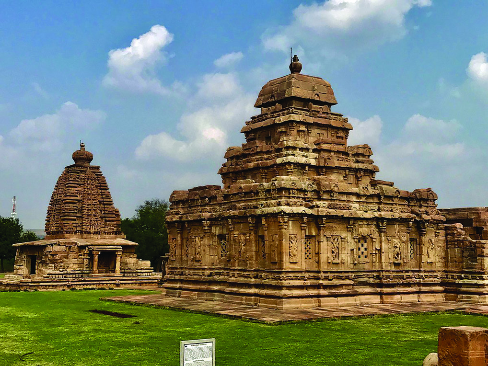

സാാമൂൂഹ്യയശാാസ്ത്രംം I
118
അധ്യാDZായംം 6
വിരൂപാക്ഷ ക്ഷേ�ത്രംം - പട്ടടയ്ക്കൽ
വിരൂപാക്ഷ ക്ഷേ�ത്രംം - പട്ടടയ്ക്കൽ
ഈ കാലഘട്ടത്തിൽ ചാലൂക്യർ നിര
വധിി ക്ഷേ�ത്രങ്ങൾ നിർമ്മിച്ചു. ആദ്യ
ഘട്ടത്തിൽ അവർ പാറക്കല്ല്ല്� വെ�ട്ടിി
യെ�ടുുത്തുള്ള ഗുഹാക്ഷേ�ത്രങ്ങളാണ്്
നിർമ്മിച്ചതെ�ങ്കിൽ പിന്നീട് ഘടനാാക്ഷേ�
ത്രങ്ങളായിിരുന്നുു (Structured temples)
നിർമ്മിച്ചത്.
കർണ്ണാടകത്തിലെ�
ഐഹോ�ോളിിലെ� മെെഗുുട്ടി ജൈൈനക്ഷേ�ത്രംം,
പട്ടടയ്ക്കലിലെ� വിരൂപാക്ഷക്ഷേ�ത്രം
ം
എന്നിവ ചാലൂക്യരുടെെ ഘടനാാക്ഷേ�ത്ര
ങ്ങൾക്ക് ഉദാഹരണ
ങ്ങളാണ്്. ക്ഷേ�ത്ര
ങ്ങളിൽ അവയുുടെെ മേ�ൽക്കൂരയെ� താങ്ങി
നിർത്തുന്ന തൂണുകളിൽ കൊ�ൊത്തുപണി
കളും�ം കാണാവുന്നതാാണ്്.
ചാലൂക്യരുടെെ ക്ഷേ�ത്രങ്ങൾ ഗുപ്തശൈൈലിിയിിൽ നിന്ന് രൂപപ്പെെƀട്ട് വന്നതാാ
ണെ�ങ്കിിലുംം� ദക്ഷിിണേ�ന്ത്യയയിിലെ� പ്രാദേ�ശിിക പാരമ്പര്യശൈൈലിിയായ ദ്രാവിഡ
ശൈൈലിിയാണ്് അവയിിൽ പ്രതിഫലിച്ചത്. പാറക്കല്ലുകൊ�ൊണ്ടുുള്ള നിർമ്മിതി
യായിിരുന്നുു ദ്രാവിഡ വാസ്തുവിദ്യാ�ാശൈൈലിിയുടെെ മുഖ്യസവിിശേ�ഷ
ത. സഹ്യയ
പർവതത്തിൽ നിന്നുംം� ഡക്കാൻ പീഠഭൂൂമിയിിൽ നിന്നുംം� യഥേ�ഷ്ടംം പാറ ലഭിച്ചു.
പ്രകൃതിദത്തമായ പാറകൊ�ൊണ്ട്് സമർഥരായ ശില്പികൾ മനോ�ോഹര
ങ്ങളായ
ക്ഷേ�ത്രങ്ങൾ കൊ�ൊത്തിയെ�ടുുത്തു.
ഇത്രയുംം� ക്ഷേ�ത്രങ്ങൾ നിർമ്മിക്കാൻ ചാലൂക്യരാജാാക്കന്മാാർക്ക് സാാധിിച്ചത്
എങ്ങനെ�യാാണെ�ന്ന്് നിങ്ങൾ ചിന്തിച്ചിട്ടുണ്ടോ�ോ? വിഭവങ്ങൾ, തൊ�ൊഴിിലാളികൾ,
സമ്പത്ത് എന്നിവ എങ്ങനെ�യെ�ല്ലാാമായിിരിിക്കാം ഇവർ സമാാഹരിിച്ചിട്ടു
ണ്ടാാവുക?
ക്ഷേ�ത്രങ്ങൾ
നിർമ്മിക്കാനാവശ്യമായ
പാറക്കല്ലുകൾ
ലഭ്യമായതിിനെ�
ക്കുറിച്ച് നമ്മൾ ചർച്ചചെ�യ്തല്ലോ�ോ. ഫലഭൂൂയിിഷ്ടമാായ ഡക്കാൻ പ്രദേ�ശത്തെ�
കൃഷിിയിിൽ നിന്നാണ്് അവർ സമ്പത്ത് സ്വരൂപിച്ചത്. കൃഷ്ണ, ഗോ�ോദാാവരിി നദീീ
തടങ്ങളിലെ� കൃഷിിയിിലൂടെെ അവർ മിച്ചോോăോൽപാദനം നടത്തി. മിച്ചോോăോൽ
പാദനം പുറത്തുനിന്നുംം� തൊ�ൊഴിിലാളികളെ� കൊ�ൊണ്ടുുവന്ന് പണിയെ�ടുുപ്പിക്കാൻ
സാാഹചര്യയമൊ�ൊരുുക്കി.
ദക്ഷിിണേ�ന്ത്യയയുടെെ
ഭൂൂമിശാാസ്ത്രസവി
ിശേ�ഷ
തകൾ
ചാലൂക്യരുടെെ ക്ഷേ�ത്രനിർമ്മാണത്തെ� സ്വാാ�ധീനിച്ച
തെ�ങ്ങനെ�?
Page 15


സ്റ്റാാൻഡേർഡ് IX
119
ചോxോളനാാട്ടിിൽ നിന്നുംംc ഡൽഹിിയിിലേക്ക്്
ഭൂൂപടം നിരീക്ഷിിച്ച് ഇന്ന
ത്തെ� ഏതെ�ല്ലാം� സംസ്ഥാാ
നങ്ങളിൽ ചാലൂക്യഭരണം
ം
വ്യാാ�പിച്ചിരുന്നുുവെ�ന്ന്്
കണ്ടെ�ത്തുുക.
മുൻക്ലാാസിൽ നമ്മൾ പരിിചയപ്പെെƀട്ട
ചോ�ോളന്മാാരുടേ�തുപോ�ോലെ� ഒരു കേ�ന്ദ്രീ
കൃത രാജവാാഴ്ച ഇവിടെെ ഉണ്ടാായിിരു
ന്നില്ല. മറിിച്ച്, ക്ഷേ�ത്രങ്ങൾ, ബ്രഹ്മദേ�യ
ഭൂൂമിയുടെെ ഉടമകളായ ബ്രാാഹ്മണർ,
സാാമന്തന്മാാർ എന്നിവരാാൽ നിയന്ത്രിി
തമായ ഒരു രാജവാാഴ്ചയാാണ്് നിലനി
ന്നിരുന്നത്്. അതിനാൽ തന്നെ� അധിികാര
കേ�ന്ദ്രങ്ങൾ
മാറിവന്നുുകൊ�ൊണ്ടിിരുന്നുു.
വാതാപി, വെ�ങ്കിി, കല്യാ�ാണി എന്നീ
സ്ഥലങ്ങൾ
കേ�ന്ദ്രീകരിിച്ചായിിരുന്നുു
ചാലൂക്യർ, സി.ഇ ആറാം�നൂറ്റാണ്ടു
മുതൽ പന്ത്രണ്ടാംംനൂറ്റാണ്ടുവരെെ ഭരണം
ം
നടത്തിയിിരുന്നത്്.
കേ�ന്ദ്രീകൃതമായ നികുതിസമ്പ്രദായവുംം� സംഘടിതമായ ഉദ്യോ�ോ�ഗസ്ഥവൃന്ദവുംം�
ഉണ്ടാായിിരുന്നെ�ങ്കിിലുംം�
സൈൈനിികശക്തിയിിലധിിഷ്ഠിതമായ
പ്രഭുക്കന്മാാരെെ
കേ�ന്ദ്രീകരിിച്ചാണ്് ഭരണം
ം നിലനിന്നിരുന്നത്്. സ്ഥിരമാായ ഒരു സൈൈന്യയവുംം�
നിലവിലില്ലായിിരുന്നുു. ചോ�ോളന്മാാരുടേ�തുപോ�ോലെ� രാജാാവിനെ� ഭരണത്തി
ിൽ
സഹാ
ായിിക്കാൻ മന്ത്രിിസഭയുംം� ഉണ്ടാായിിരുന്നില്ല. രാജകുുടും�ംബാംഗങ്ങൾ തന്നെ�
യാണ്് അധിികാരം വിനിയോ�ോഗിിച്ചിരുന്നത്്. പുലികേ�ശിി രണ്ടാമനാായിിരുന്നുു
ശ്രദ്ധേ�യനാായ ചാലൂക്യ ഭരണാ
ാധിികാരിി.
ചാലൂക്യ സാാമ്രാാജ്യം�ം
കേ�ന്ദ്രീകൃതഭരണം
ം
സാാമന്തവാാഴ്ച
പ്രാദേ�ശിികഭരണം
ം
ക്ഷേ�ത്രങ്ങളുടെെ സ്വാാ�ധീനം
ചുുവടെെ തന്നിട്ടുള്ള സൂചനകളുടെെ അടിസ്ഥാാനത്തിൽ ചോ�ോള _ ചാലൂക്യ
ഭരണ
ങ്ങളെ� താരതമ്യം�ം ചെ�യ്യുുക.
Page 16

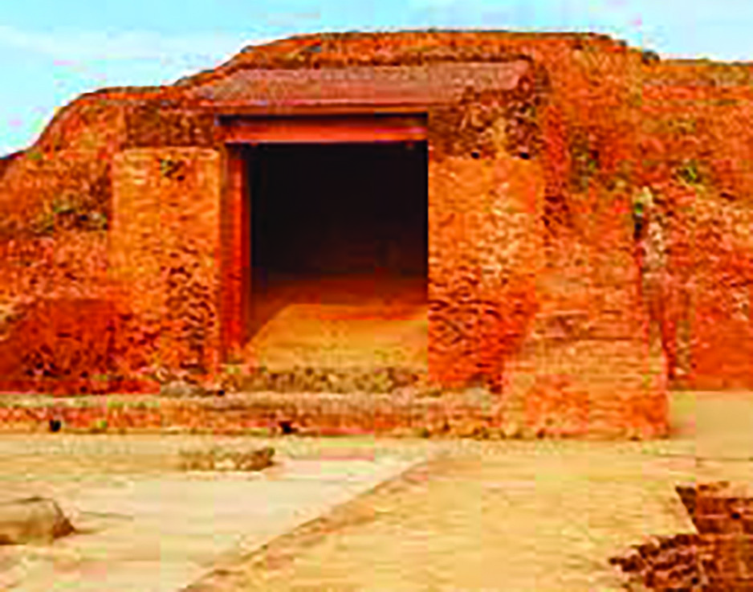
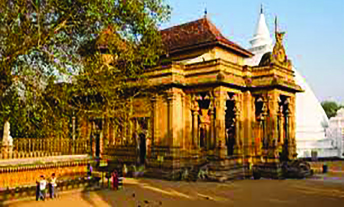

സാാമൂൂഹ്യയശാാസ്ത്രംം I
120
അധ്യാDZായംം 6
ത്രിിികക്ഷിിികൾ
സി.ഇ. അഞ്ചാംനൂറ്റാണ്ടിൽ ഇന്ത്യയയിിൽ നിലനിന്നിരുന്ന
ബുദ്ധമതപഠന കേ�ന്ദ്രമായിിരുന്ന നളന്ദയുടെെ ചിത്രമാണ്്
നൽകിയിിട്ടുള്ളത്.
ചൈൈനീീസ്
സഞ്ചാാരിിയായിിരുന്ന
ഹുയാൻസാാങ്് അടക്കം നിരവധിി പേ�ർ സന്ദർശിക്കുകയുംം�
പഠനം നടത്തുകയുംം� ചെ�യ്ത ഈ വിശ്വവിജ്ഞാാന കേ�ന്ദ്രം
പിൽക്കാലത്ത് തകർച്ചയെ� നേ�രിിട്ടു. എന്നാൽ നളന്ദ
സർവകലാശാാലയെ� പുനരുുദ്ധരിിച്ച ഭരണാ
ാധിികാരിികളിൽ
പ്രധാനിയായിിരുന്നുു
പാലരാജാാവായ
ധർമ്മപാലൻ.
നളന്ദയുടെെ ചെ�ലവിലേ�ക്കായിി അദ്ദേŔഹം ഇരുനൂറ് ഗ്രാാമ
ങ്ങൾ ദാനം നൽകി. മാത്രമല്ല, മഗധ
യിിൽ ഗംംഗാനദിിയുടെെ
തീരത്ത് കുന്നിൻ മുകളിലായിി വിജ്ഞാാനത്തിന്റെെź വളർച്ച
യ്ക്കായിി വിക്രമശിില സർവകലാശാാല സ്ഥാാപിച്ചതുംം� അദ്ദേŔ
ഹമാായിിരുന്നുു. സി.ഇ.എട്ടാം� നൂറ്റാണ്ടുമുതൽ ഒൻപതാം
നൂറ്റാണ്ടിന്റെെź പകുതിവരെെ കിഴക്കേ� ഇന്ത്യയ (ബംഗാൾ)
കേ�ന്ദ്രമാക്കി ഭരിിച്ച പാലന്മാാർ നിരവധിി ബുദ്ധവിിഹാരങ്ങൾ
നിർമ്മിച്ചു.
അയൽനാടായ ടിബറ്റുുമായിി അവർ ബന്ധം സ്ഥാാപിച്ചു.
തൽഫലമായിി ടിബറ്റിിൽ നിന്നുംം� നിരവധിി ബുദ്ധമതാ
ാനു
യായിികൾ പഠനത്തിനായിി നളന്ദയിിലേ�ക്കുംം� വിക്രമശിില
യിിലേ�ക്കുംം� വന്നിരുന്നുു. അറേ�ബ്യയിിലെ� ഖലീീഫയുമായുംം�
തെ�ക്കുകിഴക്കേ�ഷ്യയുമായുംം� പാലന്മാാർ ബന്ധം പുലർത്തി.
ഈ പ്രദേ�ശങ്ങളുമായുള്ള വ്യാാ�പാരത്തിലൂടെെ പാലരാഷ്ട്ര
ത്തിന്റെെź സാാമ്പത്തികസ്ഥിതി മെെച്ചപ്പെെƀട്ടു. മാത്രമല്ല, മലയ,
ജാാവ, സുമാത്ര എന്നീ പ്രദേ�ശങ്ങൾ ഭരിിച്ചിരുന്ന ശൈൈലേ�ന്ദ്ര
രാജാാക്കന്മാാർ പാലന്മാാരുടെെ കൊ�ൊട്ടാരത്തിലേ�ക്ക് നയതന്ത്ര
പ്രതിനിധിികളെ� അയച്ചിരുന്നുു.
വിക്രമശിില സർവകലാശാാല
നളന്ദ സർവകലാശാാല
ബുദ്ധവിിഹാരം
പാലന്മാാരുടെെ അതേ� കാലഘട്ടത്തിൽ (സി.ഇ.എട്ടാം� നൂറ്റാണ്ടു മുതൽ പത്താം
നൂറ്റാണ്ടു വരെെ) ഉത്തരേ�ന്ത്യയയുടെെ പടിഞ്ഞാറൻ പ്രദേ�ശംം ഭരിിച്ചവരായിിരുന്നുു
പ്രതിഹാരന്മാാർ. പത്താംനൂറ്റാണ്ടിന്റെെź ആദ്യം�ം ഗുജറാാത്ത് സന്ദർശിച്ച ബാഗ്ദാാദ്
കാരനാായ അൽ-മസൂ
ൂദി പ്രതിഹാരരാാജാാക്കന്മാാരുടെെ നേ�ട്ടങ്ങളെ�ക്കുറിച്ച്
വിവരിിക്കുന്നുു. ഭോ�ോജൻ ആയിിരുന്നുു ശ്രദ്ധേ�യനാായ പ്രതിഹാര ഭരണാ
ാധിികാരിി.
ഇന്ത്യയൻ സംസ്കാരത്തിന്റെെźയുംം� ബുദ്ധമതത്തിന്റെെźയുംം� വ്യാാ�പനത്തിന്റെെź കാലഘ
ട്ടമായിിരുന്നുു പാലന്മാാരുടെെ ഭരണകാ
ാലം. പ്രസ്താവനയെ�
അടിസ്ഥാാനപ്പെെƀടുത്തി
ഒരു ഡിജിറ്റൽ പതിപ്പ് തയ്യാറാക്കി അവതരിിപ്പിക്കുക.
Page 17

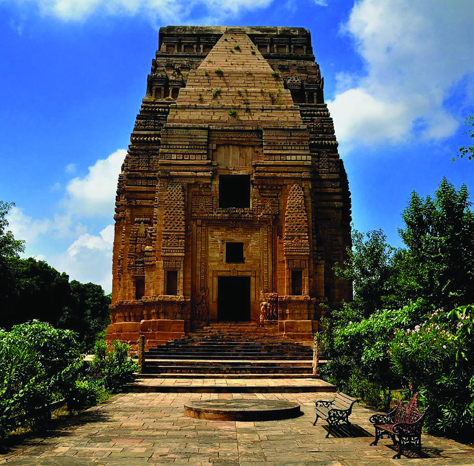
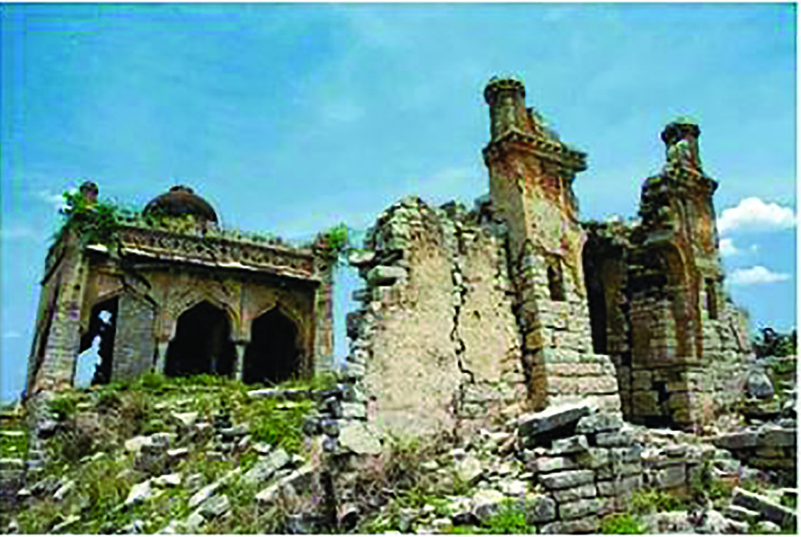
സ്റ്റാാൻഡേർഡ് IX
121
ചോxോളനാാട്ടിിൽ നിന്നുംംc ഡൽഹിിയിിലേക്ക്്
കലയെ�യുംം� സാാഹിത്യത്തെ�യുംം� പ്രതിഹാരർ
പ്രോ�ോത്സാാഹിപ്പിച്ചിരുന്നുു. സംസ്കൃതഭാഷയിിലെ� കവിയുംം�
നാടകകാരനുംം� ‘കാവ്യമീമാം�സ’, ‘കർപ്പൂരമഞ്ജരിി’
എന്നീ കൃതികളുടെെ രചയിിതാവുമായ രാജശേ�ഖര
ൻ
പ്രതിഹാരരുുടെെ കൊ�ൊട്ടാരത്തിലാണ്് ജീവിച്ചിരുന്നത്്.
ഇന്നത്തെ�
ഉത്തർപ്രദേ�ശിിലെ� കനൗജിൽ അവർ
മനോ�ോഹര
ങ്ങളായ നിരവധിി ക്ഷേ�ത്രങ്ങളും�ം കെ�ട്ടിട
ങ്ങളും�ം നിർമ്മിച്ചു. എട്ട്, ഒൻപത് നൂറ്റാണ്ടുകളിൽ
ഇന്ത്യയയിിൽ നിന്നുുള്ള പണ്ഡിതരെെ ബാഗ്ദാാദിലെ�
ഖലീീഫയുടെെ കൊ�ൊട്ടാരത്തിലേ�ക്ക് നയതന്ത്രപ്രതിനി
ധിികളായിി അയച്ചിരുന്നുു. അവർ ഇന്ത്യയൻ ശാാസ്ത്രവുംം�
ഗണി
ിതശാാസ്ത്രവുംം�
അറബിലോ�ോകത്ത് പ്രചരിിപ്പിച്ചു.
സിന്ധിലെ� അറബ് ഭരണാ
ാധിികാരിികളുമായിി പ്രതി
ഹാരർ ശത്രുതയിിലായിിരുന്നുുവെ�ങ്കിിലുംം� ഉൽപന്നങ്ങ
ളുടെെ കൈൈമാാറ്റവുംം� പണ്ഡിതരുടെെ സഞ്ചാാരവുംം�
യഥേ�ഷ്ടംം ഇന്ത്യയക്കുംം� പടിഞ്ഞാറൻ ഏഷ്യക്കുംം�
ഇടയിിൽ ഇക്കാലത്ത് നടന്നിരുന്നുു.
കല, സാാഹിത്യംം� എന്നീ രംഗങ്ങളിലെ� പ്രതിഹാരരുുടെെ നേ�ട്ടങ്ങൾ വ്യക്തമാക്കുന്ന
ഒരു ആൽബം തയ്യാറാക്കുക.
തെ�ലി കാ മന്ദിർ-ഗ്വാാ�ളിയോ�ോർ
(പ്രതിഹാര കാലഘട്ടത്തിൽ നിർമ്മിക്കപ്പെെƀട്ട
ക്ഷേ�ത്രംം)
മാൽഖേ�ദ്് കോ�ോട്ട
കർണ്ണാടകത്തിലെ� ഗുൽബർഗ ജില്ലയിിൽ സ്ഥിതി
ചെ�യ്യുുന്ന മാൽഖേ�ദ്് (മന്യാാ�ഖേ�ദ) കോ�ോട്ടയുടെെ
ചിത്രമാണ്് നൽകിയിിട്ടുള്ളത്. ‘ഷഹബാ
ാദ് ശില’
എന്ന് ഈ പ്രദേ�ശങ്ങളിൽ അറിയപ്പെെƀട്ടിരുന്ന
ചുുണ്ണാമ്പുകല്ല് കൊ�ൊണ്ടാാണ്് ഇത് നിർമ്മിച്ചിട്ടു
ള്ളത്. അതിൽ നിന്നുുതന്നെ� വളരെെ പൗരാണിക
മായ കോ�ോട്ടയാണിതെ�ന്ന്് മനസ്സിിലായല്ലോ�ോ.
സി.ഇ. എട്ടാം�നൂറ്റാണ്ടു മുതൽ പത്താംനൂറ്റാണ്ടു
വരെെ ഡക്കാണിലുംം� ദക്ഷിിണേ�ന്ത്യയയിിലുംം� ആധിി
പത്യംം� സ്ഥാാപിച്ചിരുന്ന രാഷ്ട്രകൂടരാാണ്് ഇത്
നിർമ്മിച്ചത്. ഗോ�ോവിിന്ദൻ III, അമോ�ോഘ വർഷൻ
തുടങ്ങിയവരാായിിരുന്നുു ശ്രദ്ധേ�യരാായ രാഷ്ട്ര
കൂടഭരണാ
ാധിികാരിികൾ. അമോ�ോഘവർഷൻ കന്നഡഭാ
ാഷയിിൽ രചിിച്ച ശ്രദ്ധേ�
യമാായ കൃതിയാണ്് ‘കവിരാജമാാർഗംം’. മതസഹി
ിഷ്ണുത പുലർത്തിയിിരുന്ന രാഷ്ട്ര
കൂടഭരണാ
ാധിികാരിികൾ ശൈൈവമതത്തോ�ോടും�ം വൈൈഷ്ണവമതത്തോ�ോടുമൊ�ൊപ്പം
ജൈൈനമതത്തെ�യുംം� പ്രോ�ോത്സാാഹിപ്പിച്ചു. മുസ്ലീംം� വ്യാാ�പാരിികൾക്ക് വ്യാാ�പാരം
നടത്താനുംം� സ്ഥിരവാാസത്തിനുംം� വിശ്വാാ�സം പ്രചരിിപ്പിക്കാനുംം� ആവശ്യമായ
സൗകര്യങ്ങൾ അവർ ഒരുക്കി. ഇത് വിദേ�ശവ്യാാ�പാരത്തെ� ശക്തിപ്പെെƀടുത്തി.
രാഷ്ട്രകൂടർ കലയെ�യുംം� സാാഹിത്യത്തെ�യുംം� പ്രോ�ോത്സാാഹിപ്പിച്ചു. അവരുുടെെ
Page 18


സാാമൂൂഹ്യയശാാസ്ത്രംം I
122
അധ്യാDZായംം 6
ഡൽഹിിി സൽത്തനത്ത്്്
ഇന്ത്യയയുടെെ വിവിധഭാാഗങ്ങളിൽ നിലനിന്ന പ്രാദേ�ശിികരാജ്യങ്ങളെ�ക്കുറിച്ചാ
ണല്ലോ�ോ നമ്മൾ ചർച്ചചെ�യ്തത്. സി.ഇ.പതിമൂൂന്നാം നാറ്റാണ്ടിന്റെെź ആരംഭത്തോ�ോടെെ
ഇന്ത്യയയുടെെ ഭൂൂരിിഭാഗംം പ്രദേ�ശങ്ങളും�ം ഡൽഹി കേ�ന്ദ്രമാക്കിയുള്ള ഒരു ഭരണ
സമ്പ്രദായത്തിന്റെെź കീഴിിലേ�ക്ക് മാറി. അതിന്റെെź പശ്ചാാത്തലവുംം� പ്രത്യേ�േകത
കളും�ം എന്തൊ�ൊക്കെ�യാ
ാണെ�ന്ന്് നോ�ോക്കാം. ഇന്ത്യയയുമായിി അറബികൾക്ക്
കല, സാാഹിത്യംം� എന്നീ മേ�ഖലകളിൽ പുരോ�ോഗതിി കൈൈവരിിച്ചിരുന്നുുവെ�ങ്കിിലുംം�
രാഷ്ട്രകൂടഭരണകാാലസമൂൂഹത്തെ�
ഒരു സമത്വാാ�ധിിഷ്ഠിത സമൂൂഹമാായിി പരിിഗണി
ി
ക്കാൻ കഴിിയുമോ�ോ? വിലയിിരുത്തുക.
കൈൈലാസ ക്ഷേ�ത്രംം - എല്ലോ�ോറ
സി.ഇ.എട്ടാം� നൂറ്റാണ്ടുമുതൽ പന്ത്രണ്ടാംം നൂറ്റാണ്ടുവരെെയുുള്ള കാലഘട്ടത്തിൽ
ഇന്ത്യയയുടെെ വിവിധ ഭാഗങ്ങളിൽ നിലനിന്നിരുന്ന പ്രാദേ�ശിിക രാജ്യങ്ങളിലെ�
സ്ഥിതിഗതിികൾ വിലയിിരുത്തുക.
നമ്മൾ പരിിചയപ്പെെƀട്ട ഈ മൂൂന്ന് രാഷ്ട്രങ്ങളും�ം തമ്മിൽ നിരന്തരംം യുദ്ധങ്ങളിൽ
ഏർപ്പെെƀട്ടിരുന്നുുവെ�ങ്കിിലുംം� തങ്ങളുടെെ ഭരണ
പ്രദേ�ശങ്ങളിൽ അവർ സ്ഥാായിി
യായ ഭരണം
ം ഉറപ്പാക്കി. കൃഷിിയോ�ോടൊ�ൊപ്പം കല, സാാഹിത്യംം�, ക്ഷേ�ത്രനിർമ്മാണം
എന്നിവയെ�യുംം� പ്രോ�ോത്സാാഹിപ്പിച്ചു.
കൊ�ൊട്ടാരത്തിൽ
സംസ്കൃതപണ്ഡിതന്മാാർക്കു
പുറമേ� മറ്റ് ഭാഷകളിൽ എഴുതുന്ന സാാഹിത്യ
കാരന്മാാരും�ം ജീവിച്ചിരുന്നുു. എല്ലോ�ോറയിിലെ� കൽ
വെ�ട്ട്് ക്ഷേ�ത്രംം നിർമ്മിച്ചത് രാഷ്ട്രകൂടരാായിിരുന്നുു.
രാഷ്ട്രകൂടരുുടെെ ഭരണകാ
ാലത്ത് സമൂൂഹം ജാാതി
അധിിഷ്ഠിതമായിി കൂടുതൽ വിഭജിിക്കപ്പെെƀട്ടു.
ചാതുർവർണ്യത്തിന്് പുറമേ� പലതരം വിവേ�
ചനങ്ങൾക്കുംം� അയിിത്തത്തിനുംം� വിധേ�യരാായ
സമൂൂഹങ്ങളും�ം നിലനിന്നിരുന്നുു. മരപ്പണിക്കാർ,
ചെ�രുുപ്പ് നിർമ്മാതാക്കൾ, മീൻപിടിത്തക്കാർ
തുടങ്ങിയവർ ഇതിൽ ഉൾപ്പെെƀടുന്നുു. സമൂൂഹ
ത്തിലെ� ആധിിപത്യവിഭാഗങ്ങളായ ബ്രാാഹ്മ
ണരും�ം ക്ഷത്രി
ിയരും�ം അവരുുടെെ പദവി നില
നിർത്തി. എന്നാൽ വാണിജ്യത്തിന്റെെź തകർച്ചയുംം� കൃഷിിയുടെെ പുരോ�ോഗതിിയുംം�
വൈൈശ്യയരുടെെ പദവിക്ക് കോ�ോട്ടംവരുുത്തുകയുംം� ശൂദ്രരുടെെ സ്ഥിതി മെെച്ചപ്പെെƀടു
ത്തുകയുംം� ചെ�യ്തുു. സൈൈന്യയത്തിൽ അംഗങ്ങളായതുംം� ശൂദ്രരുടെെ പദവി മെെച്ച
പ്പെെƀടുന്നതിിന്് കാരണമാായിി.
Page 19

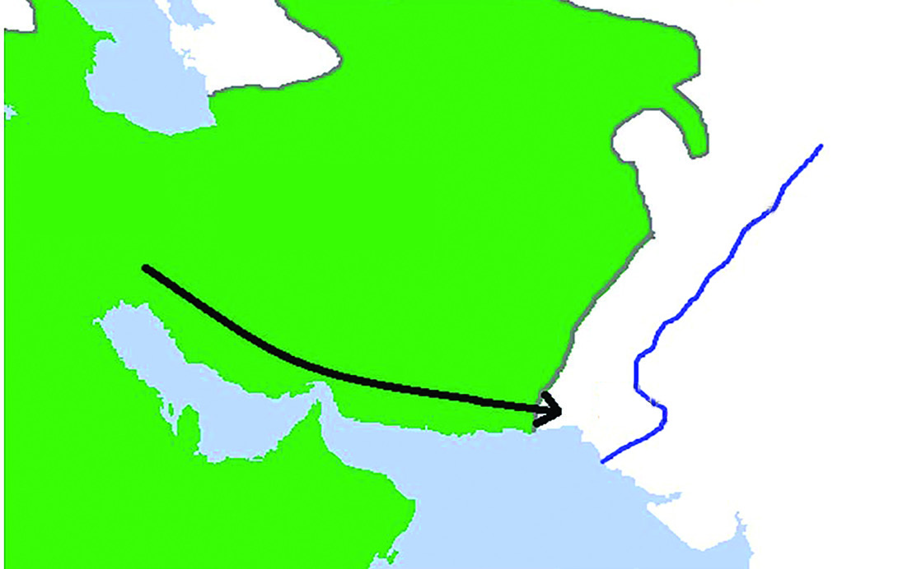
സ്റ്റാാൻഡേർഡ് IX
123
ചോxോളനാാട്ടിിൽ നിന്നുംംc ഡൽഹിിയിിലേക്ക്്
അറബിികളുടെ
സിിന്ധാക്രമണംം
വാണിജ്യ-സാംസ്കാരിിക ബന്ധമുണ്ടാായിിരുന്നുുവെ�ന്ന്് മുൻക്ലാാസിൽ നമ്മൾ
മനസ്സിിലാക്കിയല്ലോ�ോ? എന്നാൽ സി.ഇ. എട്ടാം� നൂറ്റാണ്ടിന്റെെź ആദ്യം�ം അറബി
കൾ ഇന്ത്യയൻ ഉപഭൂൂഖണ്ഡത്തിന്റെെź പടിഞ്ഞാറേ� സമുുദ്രതീരത്തെ� പ്രദേ�ശമാാ
യിിരുന്ന സിന്ധ് ആക്രമിച്ചു. ഇന്ത്യയയുടെെ സമ്പത്തുംം� അറബികളുടെെ കച്ചവട
താൽപര്യവുമായിിരുന്നുു ഈ ആക്രമണത്തിന്റെെź പിന്നിലെ� ലക്ഷ്യംം�.
ഈ ആക്രമണത്തോ�ോടെെ ഇന്ത്യയയിിലെ� വിവിധ ഭരണാ
ാധിികാരിികളുടെെ
ദൗ�ർബല്യം�ം മറ്റ് രാജ്യങ്ങൾക്ക് ബോോോധ്യപ്പെെƀട്ടു. തുടർന്ന് തുർക്കികളായ ഗസ്നിി
യിിലെ� മഹമ്മൂ
ൂദും�ം ഗോ�ോറിിലെ� മുഹമ്മദും�ം പതിനൊ�ൊന്നുംം� പന്ത്രണ്ടുംം� നൂറ്റാ
ണ്ടുകളിൽ ഇന്ത്യയയെ� ആക്രമിച്ചു. മഹമ്മൂ
ൂദ് പതിനേ�ഴ്് തവണ
ഇന്ത്യയയെ�
ആക്രമിച്ചതായിി
പറയപ്പെെƀടുന്നുു.
ഇതിൽനിന്നുുതന്നെ�
ഇന്ത്യയയുടെെ
വർധിിച്ച സമ്പത്തിനോ�ോട്് അവർക്കുണ്ടാായിിരുന്ന താൽപര്യം�ം വെ�ളിിവാകുന്നുുണ്ട്.
ഈ ആക്രമണ
ങ്ങൾ ക്രമേ�ണ
ഡൽഹി കേ�ന്ദ്രീകരിിച്ചുള്ള സുൽത്താൻ ഭരണ
ത്തിന്് (ഡൽഹി സൽത്തനത്ത്) വഴിിയൊ�ൊരുുക്കി. ഉത്തരേ�ന്ത്യയയുംം� മധ്യേ�േന്ത്യയയുംം�
ദക്ഷിിണേ�ന്ത്യയയുടെെ ചില ഭാഗങ്ങളും�ം സുൽത്താൻ ഭരണത്തി
ിൻ കീഴിിലായിിരുന്നുു.
സി.ഇ. 1206 മുതൽ 1526 വരെെ നിലനിന്ന സുൽത്താൻ ഭരണത്തി
ിന്റെെź കാലത്ത്
അഞ്ച് രാജവംംശങ്ങൾ അധിികാരത്തിലിരുന്നുു. അവ താഴെെപ്പറയുന്നുു.
ഖൽജി
മാമ്ലുുക്ക്
തുഗ്ലക്ക്
സയ്യിദ്
ലോ�ോദി
ഡൽഹിിയിലെ സൽത്തനത്ത്് കാലത്തെ രാജവംംശങ്ങൾ
പേർഷ്്യ
സിിന്ധുു നദിി
സിിന്ധ്്
ഇറാഖ്്
സി.ഇ. 712 ലാണ്് അറബികൾ
സിന്ധ് ആക്രമിച്ചത്. ഉമയ്യാദ് ഖലീീ
ഫയുടെെ സൈൈനിിക മേ�ധാാവിയായിി
രുന്ന മുഹമ്മദ് ബിൻ കാസിംം� ആണ്്
ഇതിന്് നേ�തൃത്വംം� നൽകിയത്
്.
ഖലീീഫയ്ക്കുംം� ഗവ
ർണറാായിിരുന്ന
അൽ-ഹജ്ജാാജിനുംം� പാരിിതോ�ോഷിി
കങ്ങളുമായിി സിലോ�ോണിിൽ നിന്നുംം�
അറേ�ബ്യയിിലേ�ക്ക് പോ�ോയ കപ്പൽ
സിന്ധിന്് സമീീപം കടൽക്കൊ�ൊള്ള
ക്കാർ ആക്രമിച്ചതായിിരുന്നുു അറ
ബികളുടെെ സിന്ധാക്രമണത്തിന്റെെź
പെ�ട്ടന്നുുള്ള കാരണം
ം.
Page 20


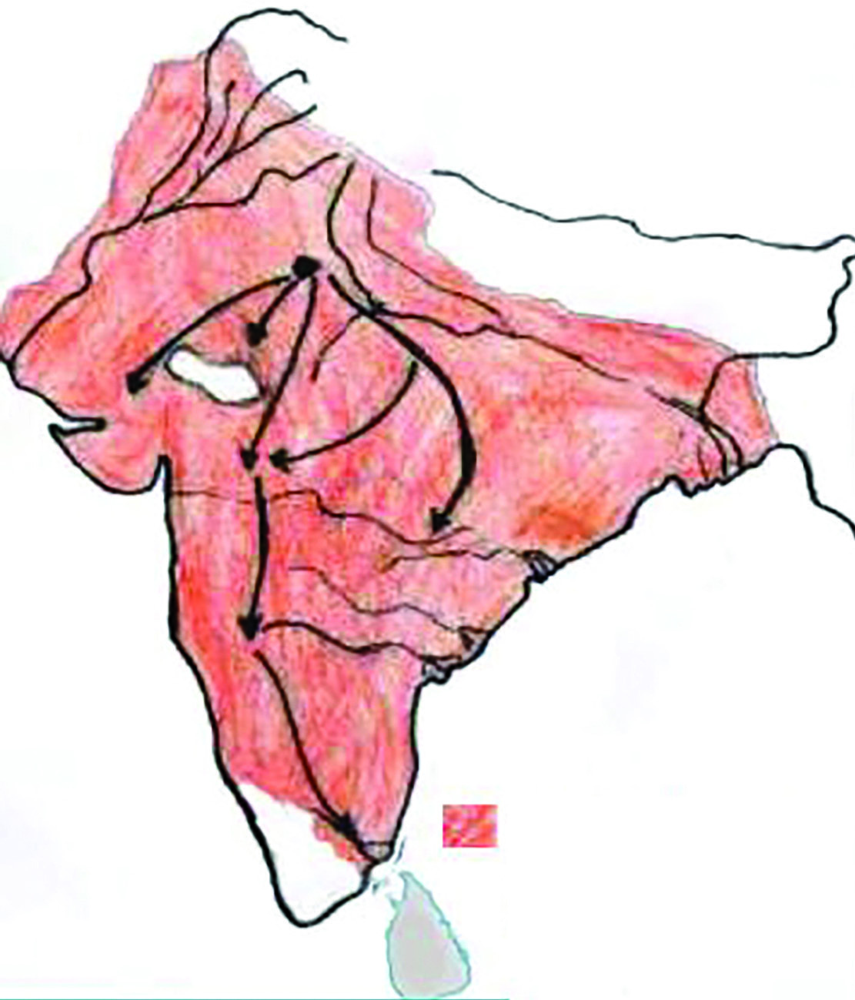
സാാമൂൂഹ്യയശാാസ്ത്രംം I
124
അധ്യാDZായംം 6
നിരവധിി ഭരണ
പരിിഷ്കാരങ്ങൾക്കുംം� പരീക്ഷണ
ങ്ങൾക്കുംം� സാാക്ഷ്യംം�വഹി
ിച്ച
കാലഘട്ടമായിിരുന്നുു ഇത്. അവയിിൽ സുപ്രധാനമാായിിരുന്നുു അലാവുദ്ദീൻ
ഖൽജിയുടെെ ഭരണകാ
ാലത്ത് (1296-1316) നടപ്പിലാക്കിയ കമ്പോ�ോളനിയന്ത്രണം
ം.
എല്ലാ ഉൽപന്നങ്ങളുടെെയുംം� വില പൊ�ൊതുവെ�യുംം� ഭക്ഷ്യസാാധനങ്ങളുടെെ
വില പ്രത്യേ�േകിച്ചുംം� നിയന്ത്രിിക്കുക എന്നതാായിിരുന്നുു ഇതിന്റെെź ലക്ഷ്യംം�.
മംഗോ�ോളിിയൻ ആക്രമണത്തെ�
തുടർന്ന് അലാവുദ്ദീന്് ശക്തമായ ഒരു
സൈൈന്യയത്തെ� കെ�ട്ടിപ്പടുക്കേ�ണ്ടിിവന്നുു. വിശാാലമായ ഒരു സൈൈന്യയത്തിന്്
ശമ്പളമായിി വലിിയ ഒരു തുക നൽകേ�ണ്ടിിവരും�ം എന്ന ആശങ്കയാണ്്
അദ്ദേŔഹത്തെ�
ഇത്തരമൊ�ൊരു
ു പരിിഷ്കാരത്തിന്് പ്രേ�രിിപ്പിച്ചത്. ഉൽപന്ന
ങ്ങൾക്ക് വില കുറവാണെ�ങ്കിിൽ കുറഞ്ഞതുക ശമ്പളമായിി നൽകിയാൽ മതിി
യല്ലോ�ോ. ഇതിന്റെെź ഭാഗമാായിി അദ്ദേŔഹം സംഭരണ
ശാാല സ്ഥാാപിക്കുകയുംം� ഉയർ
ന്നവിില ഈടാക്കുന്നവർക്കുംം� പൂഴ്ത്തിവയ്പുുകാർക്കുംം� ശിക്ഷകൾ നൽകുകയുംം�
ചെ�യ്തുു.
ആധുനികകാലത്ത് സർക്കാരുകളുടെെ പൊ�ൊതുചെ�ലവുംം� ജനങ്ങളുടെെ
ദൈൈനംംദിന ചെ�ലവുകളും�ം കുറയ്ക്കാൻ ആവശ്യമായ മാർഗങ്ങളെ�ക്കുറിച്ച്
ക്ലാാസിൽ ഒരു പാനൽ ചർച്ച സംഘടിപ്പിക്കുക.
റസിിയ സുുൽത്താന
(1236-39)
മാമ്ലുുക്ക് രാജവംംശത്തിലെ�
ശ്രദ്ധേ�യനാായ ഇൽത്തു
മിഷിിന്റെെź മകളായിിരുന്നുു
റസിയ. തന്റെെź ആൺമക്ക
ളൊ�ൊന്നുംം� തനിക്ക് ശേ�ഷംം
സിംം�ഹാസനത്തിലിരിിക്കാൻ
യോ�ോഗ്യയരല്ല എന്ന് കരുതിയ
ഇൽത്തുമിഷ് തന്റെെź അനന്ത
രാവകാാശിയായിി നിർദേ�
ശിച്ചത് മകളെ�യാായിിരുന്നുു.
ഇറാനിലുംം� ഈജിപ്തിലു
മൊ�ൊക്കെ� സ്ത്രീകൾ ഭരണാ
ാധിി
കാരിികളായിി പ്രവർത്തിച്ചി
ട്ടുണ്ടെ�ങ്കിിലുംം� സിംം�ഹാസ
നത്തിലേ�ക്ക് ഒരു സ്ത്രീയെ�
നിർദേ�ശിിക്കപ്പെെƀടുന്നത്്
അക്കാലത്തെ� സുപ്രധാന
മാറ്റം തന്നെ�യാായിിരുന്നുു.
അലാവുദ്ദീൻ ഖൽജിയുടെെ
അധീനതയിിലുണ്ടാായിിരുന്ന
പ്രദേ�ശംം (സൈൈനിിക നീക്ക
ങ്ങളാണ്് അമ്പടയാാളത്തിൽ
രേ�ഖപ്പെെƀടുത്തിയിിരിിക്കു
ന്നത്്)
Page 21
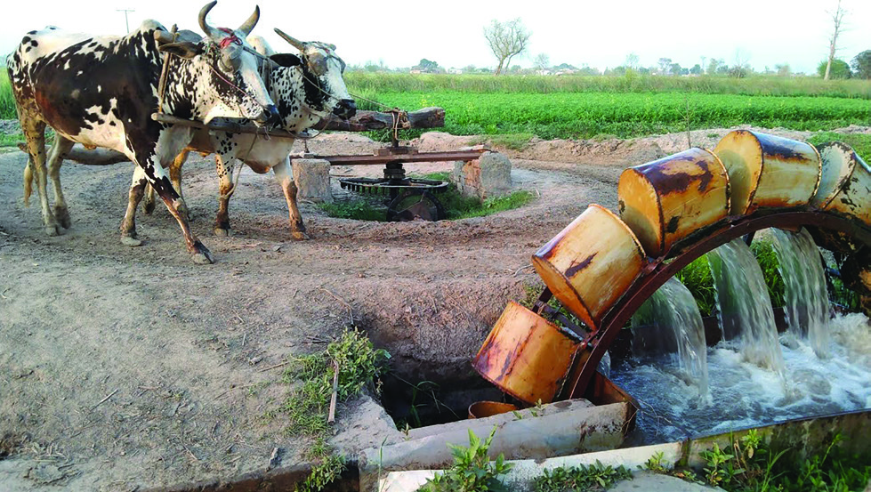

സ്റ്റാാൻഡേർഡ് IX
125
ചോxോളനാാട്ടിിൽ നിന്നുംംc ഡൽഹിിയിിലേക്ക്്
സാാമൂഹിിിക-സാാമ്പത്തിിികജീവിിതംംം
ഇന്ത്യയയിിലെ� ഫലഭൂൂയിിഷ്ടമാായ മണ്ണ് കൃഷിിക്ക് ഏറെെ അനുയോ�ോജ്യയമായിിരുന്നുു
വെ�ന്ന്് പതിനാലാം� നൂറ്റാണ്ടിൽ ഇന്ത്യയ സന്ദർശിച്ച മൊ�ൊറോ�ോക്കൻ സഞ്ചാാരിി
യായ ഇബനുുബത്തുത്ത അഭിപ്രായപ്പെെƀടുന്നുുണ്ട്. വർഷത്തിൽ രണ്ടോ�ോ മൂൂന്നോ�ോ
തവണ
കൃഷിിചെ�യ്തിിരുന്നതാായിി അദ്ദേŔഹം
രേ�ഖപ്പെെƀടുത്തിയിിട്ടുണ്ട്. ജനസം
ംഖ്യയുടെെ
ഭൂൂരിിഭാഗവുംം� കർഷകരായിിരുന്നുു. എന്നാൽ
തുടർച്ചയായ ക്ഷാമങ്ങളും�ം യുദ്ധങ്ങളും�ം
കർഷകരെെ ബുദ്ധിിമുട്ടിലാക്കി. കരിിമ്പ്,
ഗോ�ോതമ്പ്, നീലം, പരുത്തി, എണ്ണക്കുരുക്കൾ,
പഴവർഗങ്ങൾ, പൂക്കൾ എന്നിവ കൃഷിി
ചെ�യ്തിിരുന്നുു. ഇവ എണ്ണയാട്ടൽ, ശർക്കര
യുണ്ടാാക്കൽ,
നെ�യ്്ത്ത്്,
തുണികളിൽ
ചായം പിടിപ്പിക്കൽ തുടങ്ങിയ കൈൈ
ത്തൊ�ൊഴിിലുകളുടെെ പുരോ�ോഗതിിക്ക് കാരണ
മായിി. ജലാാശയത്തിൽ നിന്നുംം� കാലികളെ�
ഉപയോ�ോഗിിച്ച് ചക്രംകറക്കി വെ�ള്ളമെെടുുത്ത് ജലസേ�ചനത്തിിന്് ഉപയോ�ോഗിി
ക്കുന്ന ‘രഹത്് ജലസേ�ചന സമ്പ്രദായം’ നിലനിന്നിരുന്നുു.
കാർഷിികരംഗത്തെ� വളർച്ചയ്ക്ക് പുറമെെ ഭരണസ്ഥി
ിരത, ഗതാാഗത സംവിധാന
ങ്ങളുടെെ പുരോ�ോഗതിി, ടാങ്ക (വെ�ള്ളിി), ദിർഹം (ചെ�മ്പ്്) എന്നീ നാണയങ്ങളെ�
അടിസ്ഥാാനമാാക്കി രൂപപ്പെെƀട്ട പണവ്യവസ്ഥ (Monetary System)
എന്നിവ വ്യാാ�പാരത്തിന്റെെź വളർച്ചയ്ക്ക് കാരണമാായിി. കയറ്റുുമതിിയുംം�
ഇറക്കുമതിിയുംം�
ശക്തിപ്പെെƀട്ടു.
മിനുസപ്പട്ടുതുണി,
സ്ഫടികം,
കുതിരകൾ, ചീനപ്പാത്രങ്ങൾ, ആനക്കൊ�ൊമ്പ്, സുഗന്ധവ്യഞ്ജനങ്ങൾ
എന്നിവ വിവിധ രാജ്യങ്ങളിൽ നിന്ന് ഇറക്കുമതിി ചെ�യ്തുു. ഇന്ത്യയയിിൽ
കയറ്റുുമതിിയായിിരുന്നുു ഇറക്കുമതിിയെ�ക്കാാൾ കൂടുതൽ. അതിനാൽ
അക്കാലത്ത് സ്വർണ്ണവുംം� വെ�ള്ളിിയുംം� ഇന്ത്യയയിിലേ�ക്കൊ�ൊഴുുകിയെ�ത്തിി.
വ്യാാ�പാരത്തിന്റെെź വളർച്ച നഗര
ങ്ങളും�ം നഗരജീ
ീവിതവുംം� സുദൃഢമാ
കുന്നതിിന്് കാരണമാായിി. ഡൽഹിയുംം� ദൗ�ലത്താബാദും�ം അന്നത്തെ�
കിഴക്കൻ ലോ�ോകത്തെ� വൻകിട നഗര
ങ്ങളായിിരുന്നുു. ബംഗാളും�ം
ഗുജറാാത്തിലെ� നഗര
ങ്ങളും�ം തുണിത്തരങ്ങൾക്ക് പേ�രുുകേ�ട്ടവയാായിി
രുന്നുു. ലാഹോ�ോർ, മുൾട്ടാൻ, ലഖ്നൗ എന്നിവ തിരക്കേ�റിിയ നഗര
ങ്ങ
ളായിിരുന്നുു. ഇവിടങ്ങളിൽ നിലനിന്ന തുകൽപ്പണി, ലോ�ോഹപ്പണിി,
പരവതാാനി നിർമ്മാണം, മരപ്പണി തുടങ്ങിയ കൈൈത്തൊ�ൊഴിിലുകൾക്കു
പുറമെെ തുർക്കികൾ പേ�പ്പർ നിർമ്മാണവുംം� ആരംഭിച്ചു. രാജ്യത്തെ�
ഭൂൂമി മുഴുവൻ ഇഖ്തകളായിി തിരിിച്ച് തുർക്കി പ്രഭുക്കന്മാാർക്ക് വീതിച്ച്
നൽകിയിിരുന്നുു. ഈ ഇഖ്തകളിൽ നിന്നുുള്ള ഭൂൂനികുതി വിഹിതം
പ്രഭുക്കന്മാാർ പിരിിച്ച് സുൽത്താന്് നൽകി. നികുതി പണമാായിി
പിരിിച്ചത് ഒരു പണ സമ്പദ്വ്യയവസ്ഥയുുടെെ ആവിർഭാവത്തിനുംം� അതി
ലൂടെെ വൻതോ�ോതിലുള്ള സാാമ്പത്തികപുരോ�ോഗതിിക്കുംം� വഴിിതെ�ളിച്ചു.
രഹത്് ജലസേ�ചന സമ്പ്രദായം
ഇഖ്്ത സമ്പ്രദായംം
ഡൽഹിയിിലെ� സുൽ
ത്താനായിിരുന്ന ഇൽത്തു
മിഷിിന്റെെź കാലത്താണ്്
ഇഖ്തസമ്പ്രദായം നടപ്പി
ലാക്കിയത്്. രാജ്യത്തെ�
ചെ�റുുതുംം� വലുുതുമായ
ഭൂൂപ്രദേ�ശങ്ങളായിി
തിരിിച്ച് അവയെ�
സൈൈനിികർ, ഉദ്യോ�ോ�
ഗസ്ഥർ, പ്രഭുക്കന്മാാർ
എന്നിവർക്ക് വീതിച്ചു
നൽകുന്ന ഭൂൂമിദാന
സമ്പ്രദായമാായിിരുന്നുു
ഇത്. ദാനം നൽകുന്ന
ഭൂൂപ്രദേ�ശംം ഇഖ്തകൾ
Page 22


സാാമൂൂഹ്യയശാാസ്ത്രംം I
126
അധ്യാDZായംം 6
പ്രാച
ീനഇന്ത്യ
സുുൽത്താൻ ഭരണംം
ജാതിവ്്യവസ്ഥ
.............................................................
.............................................................
സ്തീപദവിി
.............................................................
.............................................................
പ്രാചീന ഇന്ത്യയയിിലെ� സാാമൂൂഹികജീവിതത്തെ� ചുുവടെെ തന്നിട്ടുള്ള സൂച
നകളുടെെ അടിസ്ഥാാനത്തിൽ സുൽത്താൻ ഭരണകാ
ാലത്തെ� സാാമൂൂഹിക
ജീവിതത്തോ�ോട് താരതമ്യം�ം ചെ�യ്യുുക.
സാംസ്കാാരിിിക ജീവിിതംംം
നിങ്ങൾക്ക് പരിിചയമുുള്ള ചില സംഗീത ഉപകരണ
ങ്ങളുടെെ ചിത്രങ്ങ
ളാണ്് നൽകിയിിട്ടുള്ളത്. ഇവയുുടെെ പേ�ര്് കണ്ടെ�ത്താാമോ�ോ? ഡൽഹി സുൽ
ത്താന്മാാരുടെെ കാലത്താണ്് ഈ സംഗീത ഉപകരണ
ങ്ങൾ ഇന്ത്യയയിിലേ�ക്ക്
വന്നത്്. ഇത്തരത്തിൽ സുൽത്താൻ ഭരണം
ം ഇന്ത്യയയുടെെ സാംസ്കാരിിക
ജീവിതത്തെ� ശക്തമായിി സ്വാാ�ധീനിച്ചിരുന്നുു. ഇന്ത്യയയുടെെ വിവിധ പ്രദേ�ശ
ങ്ങളിലുംം� ജനജീീവിതത്തിന്റെെź വിവിധ മേ�ഖ
ലകളിലുംം� വ്യത്യസ്ത രീതിയിി
ലായിിരുന്നുു സുൽത്താൻ ഭരണം
ം സ്വാാ�ധീനം ചെ�ലുുത്തിയത്്. മാത്രമല്ല
അത് പൊ�ൊടുന്നനെ�
സംഭവിിച്ചതുമായിിരുന്നില്ല, മറിിച്ച് ദീർഘനാളത്തെ�
പരസ്പരബ
ന്ധത്തിലൂടെെയാണ്് രണ്ട് സംസ്കാരങ്ങളുടെെ സമന്വവയം രൂപ
പ്പെെƀട്ടത്. അതിൽ ചിലപ്പോോƀോഴൊ�ൊക്കെ� ഉയർച്ച-താഴ്ചകൾ സംഭവിിച്ചിട്ടുണ്ട്.
സുൽത്താൻ ഭരണകാ
ാലത്ത് കാർഷിികമേ�ഖലയിിലുണ്ടാായ പുരോ�ോഗതിി
രാജ്യത്തിന്റെെź സാാമ്പത്തികരംഗത്തെ� എങ്ങനെ�യെ�ല്ലാം� സ്വാാ�ധീനിച്ചുവെ�ന്ന്്
പരിിശോ�ോധിിക്കുക.
ഇനി സുൽത്താൻ ഭരണകാ
ാലത്തെ� സാാമൂൂഹികജീവിതം എങ്ങനെ�യാായിിരുന്നുു
വെ�ന്ന്് നോ�ോക്കാം. മധ്യകാല സമൂൂഹം നിരവധിി അസമത്വവങ്ങൾ നിറഞ്ഞതാ
യിിരുന്നുു. സുൽത്താൻ, മുഖ്യപ്രഭുക്കന്മാാർ, ‘മുഖ്ദം’ എന്നറിിയപ്പെെƀട്ട ഗ്രാാമത്ത
ലവൻ, ചെ�റുുകിട പ്രഭുക്കന്മാാർ എന്നിവർ ഉയർന്ന നിലവാരത്തിലുള്ള ജീവിതം
നയിിച്ചു. നഗര
ങ്ങളിലെ�യുംം� ഗ്രാാമങ്ങളിലെ�യുംം� ഭൂൂരിിഭാഗംം ജനങ്ങളും�ം നിരവധിി
യാതനകൾ അനുഭവിിച്ചിരുന്നുു. ജാാതിവ്യവസ്ഥയിിൽ അധിിഷ്ഠിതമായിി നില
നിന്ന സാാമൂൂഹിക ഘടനയ്ക്ക് അടിസ്ഥാാനപരമാായ മാറ്റങ്ങളൊ�ൊന്നുംം� സംഭവിിച്ചില്ല.
സ്ത്രീപദവിക്ക് ചെ�റിിയ മാറ്റം വന്നതാായിി ചിലർ അഭിപ്രായപ്പെെƀടുന്നുുണ്ട്. സ്ത്രീകളുടെെ
സ്വത്തിന്മേ�ലുുള്ള അവകാാശത്തിലാണ്് പുരോ�ോഗമന
പരമാായ ഈ മാറ്റം കാണാൻ
കഴിിയുന്നത്്. എന്നാൽ ജാാതിവ്യവസ്ഥ തദ്ദേŔശീയരും�ം ഇസ്ലാമതവിശ്വാാ�സികളും�ം
തമ്മിലുള്ള ഇടപെ�ടലിനെ� പരിിമിതപ്പെെƀടുത്തിയിില്ല. സൈൈന്യയത്തിന്റെെźയുംം�
ഭരണത്തി
ിന്റെെźയുംം� നേ�താാക്കൾ പലപ്പോോƀോഴും�ം ഹിന്ദുമതവിശ്വാാ�സികളായിിരുന്നുു.
Page 23
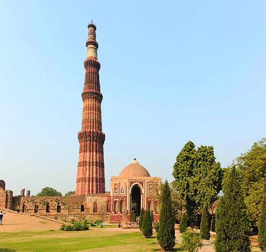
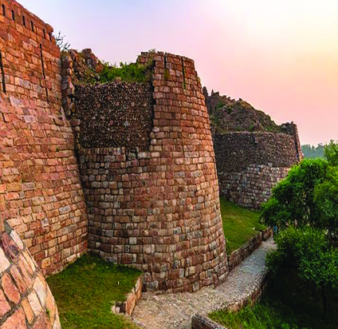
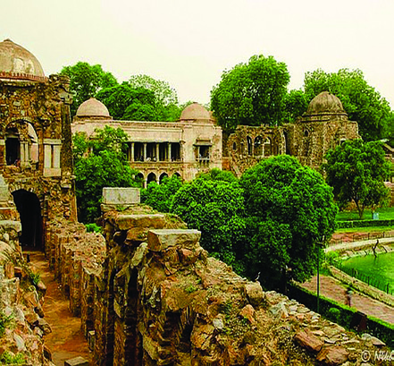

സ്റ്റാാൻഡേർഡ് IX
127
ചോxോളനാാട്ടിിൽ നിന്നുംംc ഡൽഹിിയിിലേക്ക്്
കുത്തബ്മിനാർ
തുഗ്ലക്കാബാദ് കോ�ോട്ട
ഹോ�ോസ്
് ഖാസ് സമുുച്ചയം
ലോ�ോധിി പൂന്തോ�ോട്ടംം
സംഗീതത്തിനു പുറമെെ വാസ്തുവിദ്യ, സാാഹിത്യംം� എന്നീ രംഗങ്ങളിലുംം�
ഈ സ്വാാ�ധീനം കാണാൻ കഴിിയുംം�. ഡൽഹിയിിൽ സ്ഥിതിചെ�യ്യുുന്ന
കുത്തബ്മിനാർ, തുഗ്ലക്കാബാദ് കോ�ോട്ട, ഹോ�ോസ്
് ഖാസ് സമുുച്ചയം, ലോ�ോധിി
പൂന്തോ�ോട്ടംം എന്നിവ വാസ്തുവിദ്യാ�ാരംഗത്തെ� സംഭാവനകൾക്ക് ചില ഉദാഹരണ
ങ്ങളാണ്്.
അറബിഭാഷയിിൽ ഇക്കാലത്ത് നിരവധിി കൃതികൾ രചിിക്കപ്പെെƀടുകയുംം� ഇന്ത്യയ
യിിൽ നിന്നുംം� ചില ശാാസ്ത്രഗ്രന്ഥങ്ങളും�ം ജ്യോ�ോ�തിശാാസ്ത്ര ഗ്രന്ഥങ്ങളും�ം അറബി
ഭാഷയിിലേ�ക്ക് തർജമ ചെ�യ്യപ്പെെƀടുകയുമുണ്ടാായിി. തുർക്കികളുടെെ വരവോ�ോ
ടെെ
പേ�ർഷ്യൻഭാഷ ഇന്ത്യയയിിലേ�ക്ക് കടന്നുുവന്നുു. പേ�ർഷ്യൻ ഭാഷയിിൽ മനോ�ോഹ
രങ്ങളായ കൃതികൾ രചിിച്ച സാാഹിത്യകാരനാായിിരുന്നുു അമീർഖുസ്രുു. ചരിിത്ര
രചനയുംം� ഇക്കാലത്ത് ഒരു പ്രമുഖ ശാാഖയാായിി വളർന്നുുവന്നുു. സിയാവുദ്ദീൻ
ബറാനി സുൽത്താൻ ഭരണകാ
ാലത്ത് ഇന്ത്യയയിിൽ ജീവിച്ചിരുന്ന പ്രശസ്തനാ
യൊ�ൊരുു ചരിിത്രകാരനാായിിരുന്നുു.
ഉർദുുഭാഷയുംും അമീർഖുുസ്രുുവുംും.
ഡൽഹിയിിലെ�യുംം� പരിിസരപ്രദേ�ശങ്ങളിലെ�യുംം� ജനങ്ങളുടെെ സംസാാരഭാാഷയാ
ായിിരുന്ന ഹിന്ദാവിയു
ടെെയുംം� വിദേ�ശഭാാഷയാായ പേ�ർഷ്യന്റെെźയുംം� സംയോ�ോജനത്തിിലൂടെെയാണ്് ഉർദുഭാഷ വികാസം പ്രാപി
ച്ചത്. ഉർദുഭാഷയുുടെെ വികാസത്തിൽ മധ്യകാലഇന്ത്യയയിിൽ ജീവിച്ചിരുന്ന പ്രശസ്ത കവി അമീർഖുസ്രുു
പ്രധാന പങ്കുവഹി
ിച്ചിരുന്നുു. ഒരിിക്കൽ അദ്ദേŔഹം ഇന്ത്യയയെ�ക്കുുറിച്ച് പറഞ്ഞ വാക്കുകളാണ്് ചുുവടെെ
തന്നിട്ടുള്ളത്.
“രണ്ട് കാരണങ്ങളാൽ ഞാൻ ഇന്ത്യയെ
സ്്നേഹിക്കുന്നുന്നു, ഒന്നാമതായി
ഇന്ത്യ എന്റെ ജന്മഭൂമിയാണ്്. ജന്മനാടിനെ
സ്്നേഹിക്കുക എന്നത്് ഓരോ�ോ
രുത്തരുടെയും വിശ്വാസത്ിന്റെ ഭാഗമാണ്്. രണ്ടാമതായി ഇന്ത്യ ഒരു
സുന്ദരലോ�ോകമാണ്്.
ഖുറാസനേക്കാ
ൾ
സുന്ദരമാണ്്
ഇവിടത്തെ
കാലാവസ്ഥ. വർഷം മുഴുവൻ പൂക്കളും ഹരിതാഭയും നിറഞ്ഞതാണ്്
ഇവിടത്തെ ഭൂപ്രകൃതി. ”
Page 24


സാാമൂൂഹ്യയശാാസ്ത്രംം I
128
അധ്യാDZായംം 6
സുൽത്താൻ ഭരണം
ം ഇന്ത്യയയുടെെ ഭരണ
ക്രമത്തിലുംം� സാംസ്കാരിിക ജീവിതത്തിലുംം�
ചെ�ലുുത്തിയ സ്വാാ�ധീനത്തെ�ക്കുറിച്ച് ക്ലാാസിൽ ഒരു സെ�മിിനാർ സംഘടിപ്പിക്കുക.
ഇന്ത്യയയിിൽ വാസ്തുവിദ്യാ�ാരംഗത്തുണ്ടാായ മാറ്റങ്ങളും�ം സ്വാാ�ധീനവുംം� കാണിക്കുന്ന ഒരു ഡിജിറ്റൽ
പതിപ്പ് തയ്യാറാക്കുക.
ദക്ഷിിണേ�ന്ത്യയയിിലെ� പ്രധാന രാജവംംശങ്ങളുടെെയുംം� ഡൽഹിയിിലെ� സുൽത്താൻ കാലത്തെ�യുംം�
ഭൂൂപടങ്ങൾ ഉൾപ്പെെƀടുത്തി ഡിജിറ്റൽ അറ്റ് ലസ് തയ്യാറാക്കുക.
സുുൽത്താൻ ഭരണകാ
ാലത്ത് ഇന്ത്യയയിിൽ സാംസ്കാരിിക രംഗത്തുണ്ടാായ മാറ്റങ്ങൾ വിശദീീകരിി
ക്കുന്ന ഡിജിറ്റൽ പ്രസന്റേźഷൻ തയ്യാറാക്കി ക്ലാാസിൽ അവതരിിപ്പിക്കുക.
തുടർപ്രവർത്തനങ്ങൾ
ഗുപ്തഭരണത്തി
ിന്റെെź തകർച്ചയ്ക്കു ശേ�ഷംം ഇന്ത്യയയിിൽ ഭരണ
പരമാായിി ശ്രദ്ധേ�യ
മായ ഇടപെ�ടലുകൾ നടന്നത്് ഡക്കാണിലുംം� തെ�ക്കേ� ഇന്ത്യയയിിലുമായിിരുന്നുു.
ഇവിടങ്ങളിൽ ചെ�റുുരാജ്യങ്ങളുടെെ സ്ഥാാനത്ത് വലിിയ ഭരണകൂ
ൂടങ്ങൾ
നിലവിൽ വന്നുു. പ്രാദേ�ശിിക സംസ്കാരങ്ങൾ ശക്തിപ്പെെƀട്ടു. വ്യക്ത്യാാ�ധിിഷ്ഠിതമ
ല്ലാത്ത രാജഭരണം
ം ആവിർഭവിിച്ചു. എട്ടാം� നൂറ്റാണ്ടിൽ അറബികൾ സിന്ധ്
കൈൈവശപ്പെെƀടുത്തിയതിിനെ� തുടർന്ന് ഇന്ത്യയയിിലേ�ക്ക് തുർക്കികൾ കടന്നുു
വരിികയുംം� ഏകദേ�ശംം മുന്നൂറ് വർഷക്കാലം ഇന്ത്യയ ഡൽഹി സുൽത്താന്മാാരുടെെ
ഭരണത്തി
ിൽ കീഴിിലാവുകയുംം� ചെ�യ്തുു. ഇക്കാലത്ത് ഏകീകൃതവുംം� സ്ഥിരത
യാർന്നതുുമായ ഒരു ഭരണ
ക്രമത്തിന്് ഇന്ത്യയ സാാക്ഷ്യംം� വഹി
ിച്ചു. സാംസ്കാരിിക
വിനിമയത്തിന്റെെźയുംം� സമന്വവയത്തിന്റെെźയുംം� കാലഘട്ടം കൂടിയായിിരുന്നുു ഇത്.
സുൽത്താൻ ഭരണകാ
ാലത്തെ� സാംസ്കാരിികസംഭാവനകൾ ഇന്ത്യയയുടെെ
സംസ്കാരത്തിൽ ഇപ്പോോƀോഴും�ം എത്രമാത്രം പ്രതിഫലിക്കുന്നുുണ്ട് എന്ന വിഷയ
ത്തിൽ ഒരു ചർച്ച സംഘടിപ്പിക്കുക.